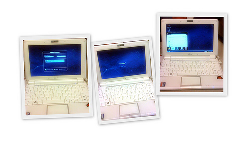

...making Linux just a little more fun!
Ben Okopnik [ben at linuxgazette.net]
----- Forwarded message from Mitchell Laks <mlaks@post.harvard.edu> -----
Date: Mon, 8 Jun 2009 15:13:39 -0400 From: Mitchell Laks <mlaks@post.harvard.edu> To: editor@linuxgazette.net Subject: icewm question. maximized windows stick to top of screen can thisbe changed?
Hi Ben,
I noticed your articles on icewm and wondered if you know the answer to this question.
I have been using icewm and am very happy with it. One issue for me is that maximizing a window, which i do as an expedient way to "make it bigger" (so that it fills the screen) also seems to make the window 'stick' to the top of the screen.
Thus the screen if maximized is stuck and I am unable to move the screen around with my mouse.
I have to manually hit 'Restore' (Alt-F5) to get out of the stuck mode. Then I can move it again.
This is not the default behavior in a kde (kwin?) session on my machine. I have noticed this type behavior before in gnome. It is my main reason why I have used kde in the past.
Is there any setting that I can set so that I would have 'maximize' but not the 'sticking'?
Is there any preferences I can set to arrange this?
I am willing to recompile icewm from scratch if neccesary. Where is this behavio r set in the code?
Thanks! Mitchell Laks
----- End forwarded message -----
-- * Ben Okopnik * Editor-in-Chief, Linux Gazette * http://LinuxGazette.NET *
ALOK ANAND [alokslayer at gmail.com]
please advice how much space needs to be allocated for each of the directory of an opensuse 11.1 operating system if you intend to install it by manually allocating space (i.e by not following the one proposed by yast2) .I'am looking for a detailed explanation of the following directories and the space needed (i have a 160 GB Hard Drive).also give me a general explanation of each of the following directories (example what do they store and the minimum space needed on a server class system)
/ /bin /boot /home /usr /var /tmp /opt /sbin
An early reply will be greatly appriciated.
Thank you
[ Thread continues here (6 messages/10.30kB) ]
J. Bakshi [j.bakshi at unlimitedmail.org]
Dear all,
Like catdoc ( to read .doc) is there any command to read .odt from command line ? did a lot googling but not found any such command like catdoc.
On the other hand I have found that .odt is actually stored in zip
format. So I have executed unzip on a .odt and It successfully
extracted a lot of files including "content.xml" which actually have
the content 
Is there any tool which can extract the plain text from .xml ?
Please suggest.
The content.xml looks like
<office:document-content office:version="1.2"> <office:scripts/> - <office:font-face-decls> <style:font-face style:name="Times New Roman" svg:font-family="'Times New Roman'" style:font-family-generic="roman" style:font-pitch="variable"/> <style:font-face style:name="Arial" svg:font-family="Arial" style:font-family-generic="swiss" style:font-pitch="variable"/> <style:font-face style:name="Arial1" svg:font-family="Arial" style:font-family-generic="system" style:font-pitch="variable"/> </office:font-face-decls> <office:automatic-styles/> - <office:body> - <office:text> - <text:sequence-decls> <text:sequence-decl text:display-outline-level="0" text:name="Illustration"/> <text:sequence-decl text:display-outline-level="0" text:name="Table"/> <text:sequence-decl text:display-outline-level="0" text:name="Text"/> <text:sequence-decl text:display-outline-level="0" text:name="Drawing"/> </text:sequence-decls> <text:p text:style-name="Standard">This is a test </text:p> </office:text> </office:body> </office:document-content>
Note the content
<text:p text:style-name="Standard">This is a test </text:p>
[ Thread continues here (5 messages/5.31kB) ]
jack [rjmayfield at satx.rr.com]
I have a Dell Latitude 400 .... is there any Linux OS that will work on this laptop?
[ Thread continues here (4 messages/2.01kB) ]
Kapil Hari Paranjape [kapil at imsc.res.in]
[[[ This references a thread that has been moved to the LG Launderette, re: the various LG mailing lists. -- Kat ]]]
Hello,
Disclaimer: Unlike you I have only been running mailman lists for a year and a half so I am unlikely to be of any help!
On Wed, 17 Jun 2009, Rick Moen wrote:
> Greetings, good people. Problem summary: After server rebuild, > virtual hosts work for SMTP, but Mailman's Web pages are appearing > for the main host only and not the virtual host.
Are the actual pages being generated in /var/lib/mail/archives/ ?
Is the apache virtual domain configured to use the mailman cgi-bin?
These were the only two questions that occurred to me when I read through your mail.
Regards,
Kapil. --
[ Thread continues here (2 messages/3.48kB) ]
Robos [robos at muon.de]
Hi TAG,
I need some help.
I'm writing a script in which I use rsync and some functions. The test script looks like this:
#!/bin/bash
set -x
LOGDATEI=/tmp/blabla
backup_rsync()
{
/usr/bin/rsync -av $@
}
backup_rsync '/tmp/rsync-test1/Dokumente\ und\ Einstellungen'
/tmp/rsync-test2/
This "Dokumente und Einstellungen" is the windows folder Documents and Settings. I'm stumped now, I've tried loots of combinations but can't seem to find the right combination so that the script works. The spaces in the name "Dokumente und Einstellungen" break the script. How do I have to escape/quote it?
A little help, please?
Regards and thanks in advance
Udo 'robos' Puetz
[ Thread continues here (3 messages/2.43kB) ]
Rick Moen [rick at linuxmafia.com]
----- Forwarded message from Rick Moen <rick@linuxmafia.com> -----
Date: Thu, 18 Jun 2009 11:47:57 -0700 From: Rick Moen <rick@linuxmafia.com> To: Mark Sapiro <mark@msapiro.net> Cc: mailman-users@python.org Subject: Re: [Mailman-Users] Virtual domain not quite working on HTTP (butfine on SMTP) Organization: Dis-
Quoting Mark Sapiro (mark@msapiro.net):
> Yes it is. 'listinfo' is a CGI. You need a > ScriptAlias /mailman/ "/usr/local/mailman/cgi-bin/"
The Apache conf has:
ScriptAlias /mailman/ /usr/lib/cgi-bin/mailman/
I didn't harp on that in either of my posts because I had pointed out that the Mailman Web pages _do work_ for the default host -- and also invited people to have a look at http://linuxmafia.com/mailman/listinfo and subpages thereof, if they had any doubts.
-=but=-, the above ScriptAlias was neatly tucked into the stanza for the default host. And:
> (or whatever the correct path is) in your httpd.conf where it will > apply to the lists.linuxgazette.net host. I.e. it needs to be in the > VirtualHost block for each host with lists or it needs to be outside > of the virtual hosts section so it applies globally.
That was it! Fixed, now.
Damn. Bear in mind, I've just had a forced transition from Apache 1.3.x to Apache2 (on account of sudden destruction of the old box), so my excuse is that Debian's Apache2 conffile setup is rather different from what I was used to.
Thank you, Mark. And thank you, good gentleman all.
-- Cheers, Notice: The value of your Hofstadter's Constant Rick Moen (the average amount of time you spend each month rick@linuxmafia.com thinking about Hofstadter's Constant) has just McQ! (4x80) been adjusted upwards.
[ Thread continues here (2 messages/2.68kB) ]
Aviongoo Sales [sales at aviongoo.com]
Jim,
I'm looking for a "simple" client server solution. I just want to upload files from my PC to my server under program control.
The client is Windows XP and the server is Linux.
I was recently forced to write a VB application to collect files on the Windows PC. Now, I need to upload the files to my Linux server. I usually use FileZilla, however, there is no easy accepted way to automate the queue building process in Filezilla, therefore manual intervention is still required.
I need to get rid of all manual intervention.
My old PHP applications had a custom server to server file transfer implemented. So, I can use that solution on the server if the client were cooperative. I setup up an Apache server on the PC client but dynamic DNS is no longer allowed by my ISP (as far as I can determine).
So, I started looking for a simple custom program solution. VB.NET was my first choice since I can reuse alot of my recently developed code.
I've looked for days (weeks) now and tried 20 or so pieces of code that claimed to allow client to server file transfer. None have worked so far.
So, the challenge is this - come up with a solution (preferably PHP on Linux and VB.NET on Windows) that a programmer can implement in five minutes that will upload a file from the VB.NET Windows client machine to the PHP Linux server machine. I just want to copy the code and have it work. I can't believe it's that hard!!!!
If you get something to work and document it well, I've got to believe millions of folks will be viewing your result. The various search terms I use in Google to try to discover a solution indicate millions are looking!
Thanks, Bill
[ Thread continues here (29 messages/75.42kB) ]
[ In reference to "An NSLU2 (Slug) Reminder Server" in LG#141 ]
Ben Okopnik [ben at linuxgazette.net]
----- Forwarded message from "Silas S. Brown" <ssb22@cam.ac.uk> -----
Date: Fri, 29 May 2009 20:34:43 +0100 From: "Silas S. Brown" <ssb22@cam.ac.uk> To: tag@lists.linuxgazette.net Subject: Talkback:141/brownss.htmlIn my article in LG 141, "An NSLU2 (Slug) Reminder Server", I suggested running a script to check for soundcard failure and repeatedly beeping the speaker to draw attention to the problem when this happens.
However, since upgrading from Debian Etch to Debian Lenny (LG 161 Upgrading Your Slug), I have found this script to be most unreliable: the NSLU2 can crash completely in the middle of a beep, leaving the speaker sounding permanently and the NSLU2 unusable until you cut the power. The probability of this crash seems to be well above an acceptable level, and the watchdog somehow fails to reboot the NSLU2 when it happens.
I have not been able to get any clue about why this failure now occurs in the new kernel + OS, except to say that it seems more likely to occur when the operating system is under load. A "workaround" is to increase the length of time between the beeps (say, beep every 10 seconds instead of every second), but this merely reduces the probability of the crash; it does not eliminate it.
Does anyone have any insight into this?
Thanks. Silas
-- Silas S Brown http://people.pwf.cam.ac.uk/ssb22* Ben Okopnik * Editor-in-Chief, Linux Gazette * http://LinuxGazette.NET *
Thomas Adam [thomas.adam22 at gmail.com]
---------- Forwarded message ----------
From: Sigurd Solås <sigsol@gmail.com> Date: 2009/5/27 Subject: How to get a random file name from a directory - thank you for the tip! To: thomas.adam22@gmail.com
Hello Thomas, I youst wanted to thank you for the shell script you provided in the Linuxgazette on how to pick a random file from a directory. Yesterday I was searcing the Internet for a simple way to do this, and then I came across your method in a post there.
The script you provided is now in use on a computer that plays wav audio files from the hard disk, and the sound card is connected to the stereo, in effect the computer works as a conventional CD-changer.
Here you can see how your method is implemented in the script aplay.sh - it is started like this from the command line:
$ aplay.sh MusicDirectory
aplay.sh:
------------------------------------------------------------------
#!/bin/sh
while sleep 1; do
myfiles=($1/*.wav)
num=${#myfiles[@]}
aplay -D hw:0,0 "${myfiles[RANDOM %num]}"
done
------------------------------------------------------------------
The aplay.sh script plays music in an endless loop, by pressing Ctrl-C once, it jumps to the next song. By pressing Ctrl-C twice in quick succession, the script exits. I dont know if you know this, but the aplay program that is used inside aplay.sh is a program that comes with the new Linux sound system ALSA, so it should be available on most of the newer Linux distributions. Again, thank you wery much for the code, and have a nice day.
Best regards,
Sigurd Solås, Norway.
[ In reference to "Easy Shell Scripting" in LG#133 ]
Papciak, Gerard (Gerry) [Gerard.Papciak at Encompassins.com]
Hello...
I have a number of files in a Unix directory that need certain words replaced.
For instance, for ever file inside /TEST I need the word 'whs' replaced with 'whs2'.
I have search and searched the sed command and kornshell scripting...no luck
Sed 's/whs/whs2/g /TEST*.* > outfileThe above came close but places the contents of all files into one.
Any advice?
-- Gerry Papciak Information Delivery
[[[Elided content]]]
[ Thread continues here (6 messages/7.95kB) ]
[ In reference to "Serving Your Home Network on a Silver Platter with Ubuntu" in LG#141 ]
Ben Okopnik [ben at linuxgazette.net]
----- Forwarded message from peter <petercmx@gmail.com> -----
Date: Fri, 15 May 2009 15:35:22 +0700 From: peter <petercmx@gmail.com> Reply-To: petercmx@gmail.com To: editor@linuxgazette.net Subject: Ubuntu Server SetupIn August 2007 ....an age ago, you published an article "Serving Your Home Network on a Silver Platter with Ubuntu". Quite good really, idiot proof, more or less. I used the article in the main to set up my first home server. It has stayed up, only crashes when I do something stupid which is only once or twice a year.
I was thinking that it is perhaps time to go back to the table and set up the server again, running 7.10 does sound a bit dated given the noise that Canonical have been making about how 9.04 is a good option for servers.
Just wondering if you have any plans to update and expand the article? There really is not much to be found through google. Well actually there is heaps of it but since it is all written in the words of the mega tech it is of zero value to people like me. There seem to be a lot of people like me who run home networks (or really want to) and need some hand holding.
The guide was good to start but it left a lot missing ... things like why you should partition properly to separate out the /home partition; how to tweak squid so that it really works well; how to implement dyndns; how to run a backup / image of the server; how to VPN / VNC..... , how to set up a common apt update server, useful things like that ......
I know that home servers are not so important in say the States where the Internet always works and works well. I live in the North West of Thailand. For entertainment we go and watch the rice grow. Trust me, that really is fun. The Internet performance sucks badly on a good day and so developing your own independence is fundamental or at least managing your Internet use. Squid helps, having your own SMTP is good (since the local ISP is owned by the government and often has problems).... as you will note there are many topics that could be covered.
Many writers can only see technology from the perspective of the West. Asia is a whole different kettle of fish and a huge expanding market.
Do let me know if you have any plans to update this guide ..... even a comment on the rss feed would be fine ....
Peter
----- End forwarded message -----
-- * Ben Okopnik * Editor-in-Chief, Linux Gazette * http://LinuxGazette.NET *
Ben Okopnik [ben at linuxgazette.net]
----- Forwarded message from Allan Peda <tl082@yahoo.com> -----
From: Allan Peda <tl082@yahoo.com> To: tag@lists.linuxgazette.netSent: Wednesday, May 20, 2009 11:34:27 AM
Subject: Two Cent tipI have written previously on other topics for LG, and then IBM, but it's been a while, and I'd like to first share this without creating a full article (though I'd consider one).
This is a bit long for a two cent tip, but I wanted to share a solution I came up with for long running processes that sometimes hang for an indefinite period of time. The solution I envisioned was to launch the process with a specified timeout period, so instead of running the problematic script directly, I would "wrap" it within a timeout shell function, which is no-coincidentally called "timeout". This script could signal reluctant processes that their time is up, allowing the calling procedure to catch an OS error, and respond appropriately.
Say the process that sometimes hung was called "long_data_load"; instead of running it directly from the command line (or a calling script), I would call it using the function defined below.
The unwrapped program might be:
long_data_load arg_one arg_two .... etc
which, for a timeout limit of 10 minutes, this would then become:
timeout 10 long_data_load arg_one arg_two .... etc
So, in the example above, if the script failed to complete within ten minutes, it would instead be killed (using a hard SIGKILL), and an error would be retuned. I have been using this on a production system for two months, and it has turned out to be very useful in re-attempting network intensive procedures that sometimes seem never to complete. Source code follows:
#!/bin/bash
#
# Allan Peda
# April 17, 2009
#
# function to call a long running script with a
# user set timeout period
# Script must have the executable bit set
#
# Note that "at" rounds down to the nearest minute
# best to use use full path
function timeout {
if [[ ${1//[^[:digit:]]} != ${1} ]]; then
echo "First argument of this function is timeout in minutes." >&2
return 1
fi
declare -i timeout_minutes=${1:-1}
shift
# sanity check, can this be run at all?
if [ ! -x $1 ]; then
echo "Error: attempt to locate background executable failed." >&2
return 2
fi
"$@" &
declare -i bckrnd_pid=$!
declare -i jobspec=$(echo kill -9 $bckrnd_pid |\
at now + $timeout_minutes minutes 2>&1 |\
perl -ne 's/\D+(\d+)\b.+/$1/ and print')
# echo kill -9 $bckrnd_pid | at now + $timeout_minutes minutes
# echo "will kill -9 $bckrnd_pid after $timeout_minutes minutes" >&2
wait $bckrnd_pid
declare -i rc=$?
# cleanup unused batch job
atrm $jobspec
return $rc
}
# test case:
# ask child to sleep for 163 seconds
# putting process into the background, the reattaching
# but kill it after 2 minutes, unless it returns
# before then
# timeout 2 /bin/sleep 163
# echo "returned $? after $SECONDS seconds."
----- End forwarded message -----
[ ... ]
[ Thread continues here (1 message/3.45kB) ]
Ben Okopnik [ben at linuxgazette.net]
----- Forwarded message from Paul Sands <paul.sands123@yahoo.co.uk> -----
Date: Wed, 20 May 2009 14:43:43 +0000 (GMT) From: Paul Sands <paul.sands123@yahoo.co.uk> Subject: 2-cent Tip - Poor Man's Computer Books To: editor@linuxgazette.netIf, like me, you can't really afford expensive computer books, find a book in your bookshop with good examples, download the example code and work through the examples. Use a reference such as the W3C CSS technical recommendation. My favourite is Sitepoint's CSS anthology
----- End forwarded message -----
-- * Ben Okopnik * Editor-in-Chief, Linux Gazette * http://LinuxGazette.NET *
[ Thread continues here (3 messages/2.59kB) ]
Mulyadi Santosa [mulyadi.santosa at gmail.com]
Hi all
Recent Linux kernel versions allow us to see how much memory owned by a process is swapped out. All you need to do is the PID of the process and grab the output of related /proc entry:
$ cat /proc/<pid of your process>/smaps | grep Swap
To easily sum up all these per-process swap output, simply use below awk script:
$ cat /proc/<pid of your process>/smaps | grep Swap | awk '{ SUM +=
$2 } END { print SUM }'
the unit is in kilobyte.
PS: This is confirmed in Fedora 9 using Linux kernel version 2.6.27.21-78.2.41.fc9.i686.
regards,
Mulyadi.
[ Thread continues here (4 messages/4.29kB) ]
Paul Sephton [paul at inet.co.za]
Hi, all
Just thought I'd share this 2c tip with you (now the mailing list is up - yay!).
I was reading a forum where a bunch of fellows were griping about e2fs lacking a defragmentation tool. Now, we all know that fragmentation is generally quite minimal with ext2/ext3, since the file system does some fancy stuff deciding where to write new files. The problem though, is when a file grows over time, it is quite likely going to fragment, particularly if the file system is already quite full.
There was a whole lot of griping, and lots of "hey you don't need defragging, its ext3 and looks after iteself, wait for ext4", etc. Not a lot of happy campers.
Of course, Ted Ts'o opened the can of worms by writing 'filefrag', which now lets people actually see the amount of fragmentation. If not for this, probably no-one would have been complaining in the first place!
I decided to test a little theory, based on the fact that when the file system writes a new file for which it already knows the size, it will do it's utmost to make the new file contiguous. This gives us a way of defragging files in a directory like so:
#!/bin/sh
# Retrieve a list for fragmented files, #fragments:filename
flist() {
for i in *; do
if [ -f $i ]; then
ff=`filefrag $i`
fn=`echo $ff | cut -f1 -d':'`
fs=`echo $ff | cut -f2 -d':' | cut -f2 -d' '`
if [ -f $fn -a $fs -gt 1 ]; then echo -e "$fs:$fn"; fi
fi
done
}
# Sort the list numeric, descending
flist | sort -n -r |
(
# for each file
while read line; do
fs=`echo $line | cut -f 1 -d':'`
fn=`echo $line | cut -f 2 -d':'`
# copy the file up to 10 times, preserving permissions
j=0;
while [ -f $fn -a $j -lt 10 ]; do
j=$[ $j + 1 ]
TMP=$$.tmp.$j
if ! cp -p "$fn" "$TMP"; then
echo copy failed [$fn]
j=10
else
# test the new temp file's fragmentation, and if less than the
# original, move the temp file over the original
ns=`filefrag $TMP | cut -f2 -d':' | cut -f2 -d' '`
if [ $ns -lt $fs ]; then
mv "$TMP" "$fn"
fs=$ns
if [ $ns -lt 2 ]; then j=10; fi
fi
fi
done
j=0;
# clean up temporary files
while [ $j -lt 10 ]; do
j=$[ $j + 1 ]
TMP=$$.tmp.$j
if [ -f $TMP ]; then
rm $TMP
else
j=10
fi
done
done
)
# report fragmentation
for i in *; do if [ -f $i ]; then filefrag $i; fi; done
Basically, it uses the 'filefrag' utility and 'sort' to determine which files are fragmented the most. Then, starting with the most fragmented file, it copies that file up to 10 times. If the copied file is less fragmented than the original, the copy gets moved over the original. Given ext2's continuous attempt to create new files as unfragmented, there's a good chance with this process, that you end up with a directory of completely defragmented files.
[ ... ]
[ Thread continues here (1 message/5.63kB) ]
By Deividson Luiz Okopnik and Howard Dyckoff

|
Contents: |
Please submit your News Bytes items in plain text; other formats may be rejected without reading. [You have been warned!] A one- or two-paragraph summary plus a URL has a much higher chance of being published than an entire press release. Submit items to bytes@linuxgazette.net.
 Power IT Down Day - August 27, 2009
Power IT Down Day - August 27, 2009 Intel, HP, Citrix and others will join together in encouraging government and industry to reduce energy consumption on the second annual Power IT Down Day, scheduled for August 27. The IT companies will promote Power IT Down Day through a series of activities and educational events. A schedule of those events, along with additional information about Power IT Down Day and green IT, can be found at http://www.hp.com/go/poweritdown.
"We can't just sit back and leave it to the next person in line to fix the planet," said Nigel Ballard, federal marketing manager for Intel. "By turning off our own computers each and every night, we make a positive environmental impact, and we proved that last year. At the end of the day, we're in this together so let's power IT down on August 27 and be part of the solution."
Ubuntu Remix to power Intel Classmate NetbooksCanonical reached an agreement with Intel in June to deliver Ubuntu Netbook Remix [UNR] as an operating system for Intel Classmate PCs.
The new Classmate is a netbook specifically designed for the education market, It features a larger screen, more memory and larger SSD or HDD than the original classmate PC. It will also feature a modified version of Ubuntu Netbook Remix for the first time, improving the experience on smaller screens. The Intel-powered convertible Classmate PC features a touch screen, converts from a clamshell to a tablet PC and auto-adjusts between landscape and portrait depending on how the machine is held. Ubuntu UNR will support all these use cases.
Ubuntu Netbook Remix is designed specifically for smaller screens and to integrate with touch screen technologies. It has proven to be popular with consumers on other devices. Ubuntu UNR makes it easy for novice computer users to launch applications and to access the Internet.
Citrix Contributes Code for Virtual Network SwitchCitrix made several key virtualization announcements at its annual Synergy Conference in Las Vegas last May. Key among these was the release of its virtual network switch code to open source, as a way of extending its low-cost XenServer infrastructure.
Along with the code donation, Citrix also announced version 5.5 of Xenserver, its free hypervisor. Citrix also revised its virtual desktop and virtual application products and released a new version of its bundled virtualization infrastructure product, Xen Essentials. Finally, Citrix is also offering virtual versions of its NetScaler web accelerator product, the VPX virtual appliance for X86 hardware, allowing lower entry costs for single and clustered NetScalers. These are described in the product section, below.
The virtual switch code reportedly will run on both the Xen and KVM hypervisors. This code can be used by 3rd party network vendors to develop virtual switches for XenServer that can compete with the Cisco Nexus 1000V virtual switch for VMware vSphere 4.0.
A virtual switch would be a good way to get more detailed insight into virtual network traffic or to partition VM traffic and this helps complete needed virtual infrastructure.
New Community Website for Growing XenServer Customer BaseIn addition to general availability of the 5.5 product releases, Citrix announced in June the XenServer Central community website, a new resource to help users with their use of the free virtualization platform. The XenServer Central website will feature the latest product information, tips and tricks, access to the Citrix KnowledgeCenter and web-based support forums. Twitter and blog postings will also be integrated.
Offers from Citrix partners for free or discounted licenses for complementary products will also be featured, as well as the latest XenServer content on CitrixTV. XenServer Central went live on June 19 at http://www.citrix.com/xenservercentral.
Dell and Goodwill Expand Free Computer Recycling ProgramDell and Goodwill Industries International are expanding Reconnect, a free drop-off program for consumers who want to responsibly recycle any brand of unwanted computer equipment, to 451 new donation sites in seven additional states - Colorado, Illinois, Indiana, Missouri, New Mexico, Oklahoma, and West Virginia. They are also expanding the program in Wisconsin. Consumers can now drop off computers at more than 1,400 Goodwill Locations in 18 states, plus the District of Columbia.
Goodwill, which is focused on creating job opportunities for individuals with disabilities or others having a hard time finding employment, plans to hire additional staff to oversee the expanded recycling program.
Reconnect offers consumers a free, convenient and responsible way to recycle used computer equipment. Consumers can drop off any brand of used equipment at participating Goodwill donation centers in their area and request a donation receipt for tax purposes. For a list of participating Goodwill locations across the U.S., visit http://www.reconnectpartnership.com.
Join us at the 18th USENIX Security Symposium, August 10 - 14, 2009, in Montreal, Canada.
USENIX Security '09 will help you stay ahead of the game by offering innovative research in a 5-day program that includes in-depth tutorials by experts such as Patrick McDaniel, Frank Adelstein, and Phil Cox; a comprehensive technical program, including a keynote address by Rich Cannings and David Bort of the Google Android Project; invited talks, including the "Top Ten Web Hacking Techniques of 2008: 'What's possible, not probable,' " by Jeremiah Grossman, WhiteHat Security; a refereed papers track, including 26 papers presenting the best new research; Work-in-Progress reports; and a Poster session. Learn the latest in security research, including memory safety, RFID, network security, attacks on privacy, and more.

http://www.usenix.org/sec09/lga
Register by July 20 and save! Additional discounts available!
August's Phoenix Linux User Group HackFest Lab will center around puppet. We will have a one-ish hour of presentation, a puppet test lab including a fully fleshed out securely setup system. We will take some fest time to show how easy it is to pull strings, maintain configurations and standards in any network comprising two or more systems. We might even turn the tables and attempt "evil" puppetry.
Please see the LinuxGazette's July "Linux Layer 8 Security" article for the lab presentation materials. Bring your recipes to wow us, since all PLUG events are full duplex, allowing for individual expansion and enrichment as we follow our critical thought, rarely constrained by anything but time. "Don't learn to hack; hack to learn".
Everything starts at around 10:00 and should break down around 13:00!
New Features listed for Forthcoming Ubuntu 9.10The next version of the popular Ubuntu Linux operating system is already taking shape and will have among its planned enhancements:
Here is a link to a YouTube demo of the Ubuntu 9.10 Alpha [running in a Parallels VM]: http://www.youtube.com/watch?v=urITb_SBLjI
A naming contest for Ubuntu 10.04 and the South African Linux communityA fun little competition may interest the South African Linux community. It surrounds the codename of Ubuntu 10.04. There are some great prizes to be won. Details can be found at: http://www.bravium.co.za/win
Fedora 11: Many Virtualization EnhancementsThe Fedora project released the next version of the popular Linux operating system in June. The new Fedora 11 release, known as "Leonidas", showcases recent enhancements to virtualization technology including management, performance and security.
Among the new virtualization features in Fedora 11, one is a redesign of 'virt-manager', an end-to-end desktop UI for managing virtual machines. The 'virt-manager' feature manages virtual machines no matter what type of virtualization technology they are using. New features within "virt-manager" include:
Learn more about this new tool at http://virt-manager.et.redhat.com/.
Also in Fedora's latest release is a sneak peak at some functional improvements to the Kernel Virtual Machine (KVM) that can set the performance bar higher for virtualized environments.
And the new integration of SELinux with the virtualization stack via sVirt provides enhanced security. Virtual machines now run effectively isolated from the host and one another, making it harder for security flaws to be exploited in the hypervisor by malicious guests.
Fedora 11 includes the MinGW Windows cross compiler, which allows Linux-based developers to cross-compile software for a Windows target. Other new features in Fedora 11 include better support for fingerprint readers and the inclusion of the ext4 file system.
To check out KVM, sVirt, Virt Manager and other new technologies included in Fedora 11, download Fedora 11 at http://get.fedoraproject.org.
The Fedora Project showed its release schedule for Fedora 12, which does not show the customary public alpha release. This will leave testers just two public development builds to try. The first beta is planed for late August, while the second one is expected in early October. The final release of Fedora 12 is currently scheduled for November 3rd, 2009. For further information, check the Fedora 12 release schedule at: http://fedoraproject.org/wiki/Releases/12/Schedule.
Opera 10 beta: new features, new speedOpera has released the first beta of Opera 10, which sports new features, a new look and feel, and enhanced speed and performance. Opera 10 is completely free for Linux, Mac and Windows users from http://www.opera.com/next/.
Using state-of-the-art compression technology, Opera Turbo delivers 3x to 4x the speed on slower connections and can offer broadband-like speeds on dial-up. Opera 10 is also much faster on resource intensive pages such as Gmail and Facebook and is more than 40% faster than Opera 9.6.
Web developers can enjoy Web Fonts support, RGBA/HSLA color and new SVG improvementsalong with the new features in Opera Dragonfly, Opera's on-board Web development tools. Opera Dragonfly alpha 3 now allows editing of the DOM and inspection HTTP headers in more than 36 languages.
Another updated feature is the tab bar, updated from the original design, and is now resizeable, but with a twist. Pull down the tab bar (or double-click the handle) to reveal full thumbnails of all open tabs.
Oracle 11g Sets New Price/Performance Record with TPC-C BenchmarkOracle and HP have set a new world record for Oracle Database 11g Standard Edition One running on Oracle Enterprise Linux. With this result, Oracle now holds the top five record benchmark positions in the Top Ten TPC-C price/performance category.
The winning HW/SW combination - including Oracle Database 11g, Oracle Enterprise Linux and the HP ProLiant ML350 G6 Server - was posted in late May.
The result was 232,002 transactions per minute with a price/performance of $.54USD/tpmC, using Oracle Database 11g Standard Edition One with Oracle Enterprise Linux running on an HP ProLiant ML350 G6 server with a single-socket Intel Xeon E5520 quad-core processor and HP Smart Array P411 controller. This package delivered the best price-per-transaction-per-minute ever achieved with the TPC-C benchmark, in addition to delivering the fastest result for a one socket system.
TPC-C is an OLTP (online transaction processing) benchmark developed by the Transaction Processing Performance Council (TPC). The TPC-C benchmark defines a rigorous standard for calculating performance and price/performance measured by transactions per minute (tpmC) and $/tpmC, respectively. More information is available at http://www.tpc.org/.
To see the Top Ten TPC-C benchmarks by Price, go here: http://www.tpc.org/tpcc/results/tpcc_price_perf_results.asp
Talkback: Discuss this article with The Answer Gang
![[BIO]](../gx/authors/dokopnik.jpg)
Deividson was born in União da Vitória, PR, Brazil, on 14/04/1984. He became interested in computing when he was still a kid, and started to code when he was 12 years old. He is a graduate in Information Systems and is finishing his specialization in Networks and Web Development. He codes in several languages, including C/C++/C#, PHP, Visual Basic, Object Pascal and others.
Deividson works in Porto União's Town Hall as a Computer Technician, and specializes in Web and Desktop system development, and Database/Network Maintenance.
Howard Dyckoff is a long term IT professional with primary experience at
Fortune 100 and 200 firms. Before his IT career, he worked for Aviation
Week and Space Technology magazine and before that used to edit SkyCom, a
newsletter for astronomers and rocketeers. He hails from the Republic of
Brooklyn [and Polytechnic Institute] and now, after several trips to
Himalayan mountain tops, resides in the SF Bay Area with a large book
collection and several pet rocks.
Howard maintains the Technology-Events blog at
blogspot.com from which he contributes the Events listing for Linux
Gazette. Visit the blog to preview some of the next month's NewsBytes
Events.

By Lisa Kachold

As users of Linux each of us is in a unique position with a powerful tool. Use of any tool without regard for security is dangerous. Developers likewise carry a great responsibility to the community to maintain systems in a secure way. Systems Administrators are often placed in the uncomfortable role of holding a bastion between insecurity or pwnership and uptime.
Let's evaluate just one standard security methodology against our use of Linux as a tool: OPSEC.
Operations security (OPSEC) is a process that identifies critical information to determine if friendly actions can be observed by adversary intelligence systems, determines if information obtained by adversaries could be interpreted to be useful to them, and then executes selected measures that eliminate or reduce adversary exploitation of friendly critical information.
"If I am able to determine the enemy's dispositions while at the same time I conceal my own, then I can concentrate and he must divide." - Sun Tzu
While we might not realize it, because we are firmly rooted intellectually in the "linux security matrix", a great many international, national and local "enemies" exist who are happily exploiting the linux TCP/IP stack while laughing maniacally. If you don't believe me, on what basis do you argue your case? Have you ever tested or applied OPSEC Assessment methodologies to your (select one):
a) Laptop SSH b) Application Code or db2/mysql/JDBC c) Server (SMTP, DNS, WEB, LDAP, SSH, VPN)
OPSEC as a methodology was developed during the Vietnam War, when Admiral Ulysses Sharp, Commander-in-chief, Pacific, established the "Purple Dragon" team after realizing that current counterintelligence and security measures alone were insufficient. They conceived of and utilized the methodology of "Thinking like the wolf", or looking at your own organization from an adversarial viewpoint. When developing and recommending corrective actions to their command, they then coined the term "Operations Security".
OPSEC is also a very good critical assessment skill to teach those who are learning to trust appropriately and live in this big "dog eat dog" world. A psychologist once suggested to me that "thinking of all the things you could do (but wouldn't)" was a technique invaluable to understanding human nature, personal motivations and chaos/order in natural systems. Since linux people tend to be interested in powerful computing, glazed eye techno-sheik, and s-hexy solutions that just work - they also are generally extremely ethical and take reasonable responsibility for computer security, once they know where to start.
Now, we all know that computer security is a layered process, wherein we, as users, developers and administrators form one of the layers.
The OSI model is a 7-layer abstract model that describes an architecture of data communications for networked computers. The layers build upon each other, allowing for abstraction of specific functions in each one. The top (7th) layer is the Application Layer describing methods and protocols of software applications.
Layer 8 is Internet jargon used to refer to the "user" or "political" layer as an extension of the OSI model of computer networking.
Since the OSI layer numbers are commonly used to discuss networking topics, a troubleshooter may describe an issue caused by a user to be a layer 8 issue, similar to the PEBKAC acronym and the ID-Ten-T Error.
We can see that SSH keys (or a lack of them) alone is not any big security issue. However add root users, fully routable internet addressing (rather than NAT), no iptables or other firewall, no password management or security policy and a curiously Ettercap armed angry underpaid antisocial personality disorder user, and well, there might be a problem?
The OPSEC Assessment Steps are:
Identify information critically important to the organization, mission, project or home [intellectual property, mission details, plans, R&D, capabilities, degradations, key personnel deployment data, medical records, contracts, network schematics, etc.]
But "Wait", you say, "I am just a kid with a laptop computer!" Do you frequent the coffee shop? Do you use shared networking? Do you allow others to watch you login to your bank information from over your shoulder. If so, OPSEC is certainly for you.
While this step is a great deal more dire to a systems administrator, who clearly knows how easy it is to crash a system and lose all of the work from 30 or more professionals with a single command, or one who realizes that pwnership means never being able to define stable uptime, each and every computer user knows what it's like not to be able to depend on any data stability. Security = stability in every venue.
Identify the relevant adversaries, competitors or criminals with both intent and capability to acquire your critical information.
If you have not taken a moment to look at your logs to see all the attempts to gain access via SSH or ftp, or sat seriously in a coffee shop evaluating wireless traffic or watched tcpdump to see what is occuring on a University network, this might be the time to start. It's not just people from China and Russia (scripts including netcat, nmap, and MetaSploit can be trivially configured to spoof these addresses). Wake up and look around at conferences and ask yourself seriously, who is a competitor, who is a criminal. This is a required step in OPSEC. In the 1990's in the Pacific Northwest, adversarial contract Linux Systems Administrators regulary attacked each other's web servers.
But, you say, "why would they want to get into my little laptop?". You have 24x7 uptime, correct? Your system can be configured via Anacron, as a vague untraceable BOT net and you would never even know it? That BOT net can hog your bandwidth and steal your processing power and eventually be used to take down servers.
From the adversary's, competitor's, or thief's perspective, identify potential vulnerabilities and means to gain access to the results of step 1. Interview a representative sample of individuals.
If you have not googled to ensure that the version of Firefox you are running is secure from known exploits, you have not completed this step. If you don't know the current vulnerabilites of the version of OpenSSH and Apache or Java or other mydriad of binary source code installed with your Ubuntu or Fedora, you have no basis for using linux technology wisely.
While I don't recommend that everyone attend DefCon, reading their public website might be sufficient to impress you with the importance of OPSEC. Better yet, burn yourself a BackTrack4 LiveCD and run some of the tools against your own systems.
There are two basic ways to get into Linux using the OSI stack models: "top down" or "bottom up".
From: OSI Model
Layer:Most issues are due to Layer 8!
Assess the risk of each vulnerability by its respective impact to mission accomplishment / performance if obtained.
After testing your SSH via an outside network or scanning your J2EE application cluster from a Trial IBM WatchFire AppScan key, or fuzzing your Apache 1.33/LDAP from the shared (no VLAN public network) or accessing/cracking your own WEP key in five minutes, you will clearly see that you essentially own nothing, can verify no stability, and as soon as your systems are encroached all bets are off.
This is, for instance, the point where the iPhone/Blackberry user/server Administrator realizes that his phone is perhaps doing more than he planned and wonders at the unchecked, unscanned pdf attachment inclusion policy set in Layer 8/9, but without OPSEC, this point always occurs too late. Phones potentially integrate with everything, have IP addresses and are generally ignored!
Again, leaving off printers, for instance, is folly, since many HP printers and IPP protocol could be trivially encroached or spoofed via something unleashed from an innocous attachment.
This step must be all inclusive including every adjacent technology that each system interfaces with.
Generate / recommend specific measures that counter identified vulnerabilities. Prioritize and enact relevant protection measures.
Now before you all go kicking and screaming, running from this process due to the pain of "limitations" on your computing freedom, be assured that there are "solutions".
Evaluate and measure effectiveness, adjust accordingly.
These solutions can be as simple as a wrapper for SSH, upgrading to OpenVPN (which is really trivial to implement), using NoScript on a browser, or never using a browser via root from a production server. They can include a server based IPTABLE implemented once, or be as all inclusive as a Layer 7 application switch (which can be cheaper in a "house of cards" development shop than a complete code review (for PCI compliance) or rewrite. For Tomcat fuzzing for instance, an inline IDS or mod_security or mod_proxy architectural change will save months of DoS.
If you must engage in social networking or surfing to warez sites accepting javascript, doing so from a designated semi insecure system might be a good measure.
Thinking outside of the box at layered solutions is key, and at the very least, quit immediately continuing the Layer 8 behavior identified as dangerous. Turn off SSH at the coffee shop; you aren't using it anyway. In fact, turn off Bluetooth as well, which is probably still on from your build?
A great deal of data will be uncovered through this investigation, so an organized documented approach will allow you to sort it out. You will find that it might be simpler to replace or upgrade, rather than attempt to protect. It's not unrealistic to expect to have to upgrade at least every four years, considering that you are applying standard patches, based on the past 10+ years of Linux history.
If (when) you identify dangerous Layer 9 (management) policies, document and escalate, so that your responsibility as an ethical technology user has been passed along or up. Apathy and attitudes such as "security reporting is unpopular" or "everyone ignored it this long, if I say something they will think I am silly" are destructive to all. Use references if you must; security is everyone's responsibility.
The single most dangerous Layer 8/9 policy is one of computer security compartmentalization. Prime examples of compartmentalization include:
While in a healthy corporate enviroment responsibility travels up, in a healthy open source environment responsibility is an organized process; and everywhere security cannot be ignored.
Zero vulnerabilities are completely unrealistic. If you are working in a shop that functions as if there is complete systems security without OPSEC or catching yourself thinking that there are no security risks, this is a serious red flag. 100% awareness is the only realistic approach. As a general rule, those aware of what to protect have a better chance of protecting sensitive information as opposed to those unaware of its value.
Obtain threat data from the experts, don't try to perform all the analysis on your own.
This can be as simple as getting a list of the data from CERT related to your technologies, be it Cisco IOS for your Pix or simply OpenWRT.
And much as you are not going to want to believe it, usually there will still be 8% of computer security exploit experts who can, after you have mitigated all known risks, still get into your systems. Feature this truth into your analysis.
Focus on what can be protected versus what has been revealed.
For instance, you might realize, after playing with BackTrack3 SMB4K that all this time your SAMBA was allowing Wireless file sharing to Windows neighbors and your private information including your personal photos were available to all. Simply close the door. Paranoia in security is optional and certainly not recommended.
Observations, findings and proposed counter measures are best formatted in a plan of action with milestones to mitigate vulnerabilities. In a production environment, this plan would be forwarded in a complete brief to decision makers, adjacent team users and anyone with a stake in uptime.
Integrate OPSEC into planning and decision processes from the beginning. Waiting until the last minute before taking a product to market (or from market) to conduct an assessment may be too late and costly.
"What QA department?" you might ask. "We are the QA department and we don't have time to scan". It's simple to run a Wikto/Nikto or evaluation scanner against your application.
Put up a nice php/Mysql CMS or another sharing portal? Using SVN? You might have just opened a nice encrypted tunnel directly into your systems. If you don't test it, you won't know! Did you evaluate that SugarCRM version before building? Did you look into the known exploits of that open source tool before adopting it?
Regular assessments ensure your best protection.
Like disaster recovery, systems OPSEC Assessments are built upon. Revealed information is retained as a resource; regularly scheduled assessments continue as a group team coordinated event.
Systems security is not a secret; OPSEC reminds us that all systems are only as sick as their secrets.
Talkback: Discuss this article with The Answer Gang
![[BIO]](../gx/authors/kachold.jpg)
Lisa Kachold is a Linux Security/Systems Administrator, Webmistress, inactive CCNA, and Code Monkey with over 20 years Unix/Linux production experience. Lisa is a past teacher from FreeGeek.org, a presenter at DesertCodeCamp, Wikipedia user and avid LinuxChix member. She organized and promotes Linux Security education through the Phoenix Linux Users Group HackFEST Series labs, held second Saturday of every month at The Foundation for Blind Children in Phoenix, Arizona. Obnosis.com, a play on a words coined by LRHubbard, was registered in the 1990's, as a "word hack" from the Church of Scientology, after 6 solid years of UseNet news administration. Her biggest claim to fame is sitting in Linux Torvald's chair during an interview with OSDL.org in Oregon in 2002.
First, I must say that the GNOME documentation "strongly recommends" against building from source files. If you do, it suggests using the GARNOME scripted system. Even GARNOME it says, is only for the "brave and patient".
I started building programs from source as I wanted to upgrade a very old distribution and did not have enough disk space to install a Fedora or Ubuntu. The memory on my old PC is probably a bit low too, at 128 Meg Also, it is fun to run the latest versions, be on the leading edge, and get ahead of the major distributions. You could not run Windows Vista (tm) on my old PC!
I took the files from the latest GNOME release I could find, being version 2.25. This was probably a mistake. I later found out that odd numbered minor releases like 25 are development releases and may be unstable. The stable 2.26 series should have come out in March. In fact, when I built the file manager "Nautilus", I could not find a dependency, "libunique", so I went back to version 2.24. The GNOME sources are at http://ftp.gnome.org/pub/gnome.
I used the Beyond Linux from Scratch (BLFS) guide to know where to find packages and in what order to build them. You can find it at http://www.linuxfromscratch.org (LFS). Unfortunately the BLFS guide uses versions from the summer of 2007, GNOME version 2.18. Also, I installed the libraries and programs in the default location /usr/local, but looking back it would have been better to have put them in their own directory and give a --prefix option to "configure", as the BLFS project recommends.
It took me about a month to build a basic GNOME desktop in my spare time. Disappointingly, you don't see anything until the last piece, "gnome-session", is in place.
When I ran my first applications like the image-viewer "eye-of-gnome", some appeared on the desktop and then core-dumped. The core file said the last function called was in GTK, in the libgtk-x11 library. I had had to upgrade my GTK when building gnome-panel. I had chosen the latest version 2.15.2. This is probably a development releases too. When I switched back to my year-old GTK, everything was fine. I finally settled for the stable version recommended by GARNOME. It took me a few days to sort this out!
There is a free book on programming GNOME, "GTK+ / Gnome Application Development" by Havoc Pennington available at http://developer.gnome.org/doc/GGAD. This is somewhat old.
Overall, I like GNOME because it is truly free and lighter than KDE.
Last year (2008), I built the 4.0 release of KDE from the source files. GNOME is made up of around sixty packages, KDE about twenty. Qt (the user interface framework) and KDE are much larger than GNOME. The compressed source of Qt is about three times the size of the equivalent GTK+, GLib, Cairo and Pango put together. But, of course, KDE includes the web browser Konqueror. GNOME needs the Gecko layout engine from Mozilla.org that you see in Firefox.
Qt and KDE's C++ code is slower to compile than GNOME's C, at least on my old laptop - a Pentium III with only 128 Meg RAM! KDE uses CMake rather than "configure" to generate the makefiles. It took a while to learn how to use CMake, but its files are much clearer.
The BLFS instructions only covered KDE 3.5, so I had to adjust things for KDE 4.0. In GNOME, if you wanted to find out where to find some unusual packages, you could look at the makefiles of the GARNOME project. Its website is at http://projects.gnome.org/garnome. GARNOME automatically fetches and builds a given GNOME release.
For KDE, I had to change a little code when building the "strigi" library. (It searches through files for the semantic desktop). To be exact, I had to add definitions for "__ctype_b" and "wstring". For GNOME, it was easier. I mostly had to go off and find required libraries that were not in the BLFS notes.
KDE has trouble starting up on my laptop, although it is all right on my PC. There is a lot of swapping in and out and thrashing with my low memory. In fact, both computers have 128 Megabytes. The laptop even has a faster processor. It has a Pentium III processor whereas than the PC has a Pentium II. The disks even seem about the same speed in simple tests. It is a puzzle. Anyway, KDE takes over ten minutes to start on my laptop! GNOME takes one minute. (KDE takes just over a minute on my PC.)
On KDE, I could get the Konqueror browser running fairly easily. But I had to add about 250 Meg of swap space to get the WebKit library to link with the low memory on my PC. WebKit is the rendering engine. I like the way Konqueror uses many of the same libraries as other parts of KDE. It makes Konqueror a bit lighter when running inside of KDE. (I have put the commands I use to add swap at the end).
With Firefox 3, I had to turn the compiler optimization off with the "-O0" switch to avoid thrashing with the small memory on my old laptop. I also had to leave out a lot of the components in "libxul". Otherwise the link of libxul ends up just swapping in and out as well. (I understand XUL is the toolkit used to build the user interface of Mozilla). Firefox does not work without a real libxul though.
I thought I would try building GNOME's own browser - Epiphany. But I had trouble configuring it to use the Gecko rendering libraries in the Mozilla Firefox 3 browser I had just built. Epiphany offers a simpler interface than Firefox and concentrates just on web browsing, taking features like mail from other GNOME applications. Unfortunately Epiphany seems to expect "pkg-config" entries for Gecko, which Firefox 3 had not generated. (When you install a library, a file in /usr/lib/pkgconfig is created, listing the compiler flags (-L, -l and -I) needed by a program using the library.) I manually added in all the Firefox shared libraries I could find. But there seemed to be some core Firefox functions that Epiphany still could not access. However, Epiphany does really recommend Firefox 2. But Firefox 2 uses a lot of deprecated functions in my more modern version of Cairo. I got lost in all the errors.
Then I noticed that Epiphany's web page mentions an experimental version using WebKit as the browser engine. But the configuration seemed to have incomplete autoconf/automake files and use the Apple xcodebuild tool. It was too difficult for me. You can begin to see there is some skill required to build a complete distribution!
I later learnt from a GNOME blog that the Mozilla version of Epiphany is not actively developed any more, because about a year ago GNOME started to switch to WebKit. But the switch has not been completed. It was originally scheduled to be delivered with GNOME 2.26, but has been postponed to GNOME 2.28. I remembered that WebKit is a fork of KDE's KHTML browser engine used by Konqueror. It was made by Apple for their Safari browser, and more recently used by Google in its Chrome browser.
In the end, I built the Dillo browser. It used to use GTK and Glib. But it now uses the FLTK (Fast Light Tool Kit) - a C++ GUI toolkit. Of course, it does not support Javascript or Java.
Strangely enough, Konqueror runs quite well within GNOME! I think I will use it when developing complicated web pages which use Javascript and AJAX.
Would you enjoy building programs from the source tarballs? I think you probably need some knowledge of C. Not too much, as I didn't know a lot about C++ when I built KDE. There always seem to be a few problem with compiling packages. Here are a few to give you an idea.
A simple problem occurred when I was building the "dbus-glib-bindings" package:
DBUS_TOP_BUILDDIR=.. dbus-send --system --print-reply=literal --dest=org.freedesktop.DBus /org/freedesktop/DBus org.freedesktop.DBus.Introspectable.Introspect > dbus-bus-introspect.xml.tmp && mv dbus-bus-introspect.xml.tmp dbus-bus-introspect.xml Failed to open connection to system message bus: Failed to connect to socket /usr/local/var/run/dbus/system_bus_socket: Connection refused
I guessed it wanted the dbus system bus running. I remembered something from building D-Bus last year, had a look around, and ran "dbus-daemon --system".
A typical problem was with gnome-terminal. It included the "dbus-glib-bindings.h" header file which itself included the glib header "glib-2.0/glib/gtypes.h". But glib did not want its header file directly included and had put a "#error" statement in to give a warning. I solved this by crudely commenting out the #error.
The strangest problem I got was when running GStreamer's configure script:
./configure: line 32275: syntax error near unexpected token `('
./configure: line 32275: ` for ac_var in `(set) 2>&1 | sed -n 's/^\([a-zA-Z_][a-zA-Z0-9_]*\)=.*/\1/p'`; do'I tried narrowing it down by putting in some simple echo statements and then I changed some back ticks to the more modern "$()". But, I had the same problem with the GStreamer Plugins package. So I decided to upgrade my version of Bash, which was a year old. The LFS project suggests using the "malloc" (memory allocation) from the libc library rather than that bundled with Bash, so I also ran configure with the option "--without-bash-malloc". All this luckily fixed the problem.
Out of interest, I have added the commands I typed (over sixty times) to build the packages, at the end of this article.
I enjoy reading about the libraries as I build them. I also wanted to draw a diagram showing which packages needed to be built first.
The libraries are, in fact, described very well in the GNOME documentation at http://library.gnome.org/devel/platform-overview.
The libraries shown below are used in various combinations by the GNOME applications you see on the desktop.
My diagrams show the dependencies between packages. For example GTK requires Pango and Cairo. A package usually generates many libraries, so it is nice to think at the package level. I believe you can generate graphs of dependencies automatically from the GNOME build systems.
I have included some notes that I found in the README file or documentation that came with the packages.
I did not build most of the audio or video libraries, as I don't play music or watch videos on my laptop! It also keeps things simple.
/|\ /|\
+-------------------+
| pygtk |
| pycairo |
| pygobject | /|\ /| |\
| (python bindings) | +---- gail ----+ +-----------+ +------+
+-------------------+ | (GNOME | | dbus-glib | |libxml|
/|\ |accessibility)| | bindings | | |
+----------------------- gtk+ -----------------------+ +-----------+ +------+
| (GIMP Tool Kit - graphical user interfaces) | | D-Bus |
|-- pango --+--------+ +---- atk -----+ | (message |
|(rendering)| libpng | +---------+(accessibility| | passing |
| of text) | libjpeg| | libtiff | interfaces) | | system) |
+----------------------- cairo ----------------------+ +-----------+
| (2D graphics library for multiple output devices) |
+------------------+------------ pixman -------------+
| (low level pixel |
| manipulation, e.g. compositing) |
+----------------------------------
/|\
+-------- gvfs ---------+
| (backends include |
/|\ | sftp, smb, http, dav) |
+----------------------- glib -----------------------+
|(data structures, portability wrappers, event loop, |
|threads, dynamic loading, algorithms, object system,|
|GIO - the virtual file system replacing gnome-vfs) |
+----------------------------------------------------+
The GIO library in GLib tries not to clone the POSIX API like the older gnome-vfs package, but instead provides higher-level, document-centric interfaces. The GVFS backends for GIO are run in separate processes, which minimizes dependencies and makes the system more robust. The GVFS package contains the GVFS daemon, which spawns further mount daemons for each individual connection.
The core Pango layout engine can be used with different font and drawing backends. GNOME uses FreeType, fontconfig, and Cairo. But on Microsoft Windows, Pango can use the native Uniscribe fonts and render with the Win32 API.
The Cairo documentation says it is "designed to produce consistent output on all output media while taking advantage of display hardware acceleration when available (for example, through the X Render Extension) ... The cairo API provides operations similar to the drawing operators of PostScript and PDF. Operations in cairo include stroking and filling cubic Bezier splines, transforming and compositing translucent images, and antialiased text rendering. All drawing operations can be transformed by any affine transformation (scale, rotation, shear, etc."
GTK+ was first developed as a widget set for the GIMP (GNU Image Manipulation Program). The FAQ mentions one of the original authors, Peter Mattis, saying "I originally wrote GTK which included the three libraries, libglib, libgdk and libgtk. It featured a flat widget hierarchy. That is, you couldn't derive a new widget from an existing one. And it contained a more standard callback mechanism instead of the signal mechanism now present in GTK+. The + was added to distinguish between the original version of GTK and the new version. You can think of it as being an enhancement to the original GTK that adds object oriented features." The GTK+ package contains GDK, the GTK+ Drawing Kit, an easy to use wrapper around the standard Xlib function calls for graphics and input devices. GDK provides the same API on MS Windows.
The GAIL documentation says "GAIL provides an implementation of the ATK interfaces for GTK+ and GNOME libraries, allowing accessibility tools to interact with applications written using these libraries ... ATK provides the set of accessibility interfaces that are implemented by other toolkits and applications. Using the ATK interfaces, accessibility tools have full access to view and control running applications." GAIL stands for GNOME Accessibility Implementation Layer. It has just been moved into GTK.
D-BUS is a simple inter process communication (IPC) library based on messages. The documentation says "a core concept of the D-BUS implementation is that 'libdbus' is intended to be a low-level API, similar to Xlib. Most programmers are intended to use the bindings to GLib, Qt, Python, Mono, Java, or whatever. These bindings have varying levels of completeness."
PyGObject allows you to use GLib, GObject and GIO from Python programs.
gnome-icon-theme
/|\
icon-naming-utils
(xml to translate old icon names)
libgnomeui*
(a few extra gui widgets, many now in gtk)
/|\
+---------------------------+
| |
libbonoboui* gnome-keyring
(user interface controls (password and secrets daemon
for component framework) and library interface)
/|\ |
| libtasn1
| (Abstract Syntax Notation One)
|
+--------------------------------------+
| |
libgnome* libgnomecanvas*
(initialising applications, starting programs, (structured graphics:
accessing configuration parameters, activating polygons, beziers, text
files and URI's, displaying help) pixbufs, etc. Rendered
/|\ by Xlib or libart)
+--------------------+----------+ |
| | /|\
| gnome-vfs monikers | |
| /|\ /|\ | |
| | +-------- gnome-vfs* (virtual file system) +----------+
| | (consistent API for local and | |
| | remote files, cameras, WebDAV, etc) | |
| | /|\ | |
| | +------------+--------+ libglade libart*
| | | | (dynamically (fast 2d
| | Gconf gnome-mime-data load glade graphic
| | (configuration (classify user primitives)
libbonobo* database - file contents) interface
(component daemon & description
system, e.g. library) files)
multimedia /|\
in word processor) |
/|\ |
+------------------+
|
ORBit2+ * (fast and light CORBA object broker)
+--- libIDL (parses interface definitions for CORBA)
Note: * indicates library is depreciatedMany of the libraries on the left hand side of the diagram are not used in newly written code and references to them have been removed in some old code. But the API's are still supported, at least for the current GNOME 2.x series. GNOME is moving to using D-Bus for communication between processes. GNOME Panel applets use Bonobo to communicate with the panel. GnomeVFS has been replaced by GIO, and the GVFS library which supplies the network and local protocols.
According to the documentation, " Libglade is an alternative to using Glade's code generation. Instead of generating code from the XML interface description, libglade loads and parses the description at runtime. It also provides functions that can be used to connect signal handlers to parts of the interface."
Libart is, in its own words, a "sophisticated, antialiased, alpha-compositing engine."
The "gnome-keyring" README says it can "manage several keyrings, each with its own master password, and there is also a session keyring which is never stored to disk, but forgotten when the session ends."
According to the Wikipedia, Abstract Syntax Notation One (ASN.1), is used "in telecoms and computer networking... [and] is a standard and flexible notation that describes data structures for representing, encoding, transmitting and decoding data".
You can read the reference documentation for libbonobo at http://library.gnome.org/devel/libbonobo/stable. Maybe it is worth a skim through to get an overview. There are similar API references for GConf, gnome-vfs, libgnome, libgnomecanvas, libbonoboui and libgnomeui.
gnome-themes gnome-user-docs gnome-backgrounds gnome-terminal
| (user, admin (just the shell:
/|\ guides) menubar, prefs dialog)
| | /|\
gtk-engines gnome-doc-utils |
(themes) (xslt for Docbook vte
and translations) (terminal emulator
widget implemented in GTK)
gnome-session
|
control-center
/|\
+----+----------------+-----------------+------------+------------+
| | | | | |
| gnome-applets metacity nautilus (file manager) | gstreamer
| (for panel) (window | | | | plugins
| | | manager) /|\ libexif librsvg | |
| /|\ libgtop | | (digital (fast | +------+------+
| | (portable zenity | cameras) SVG) | | |
| | performance (dialogs | | | gstreamer liboil
| | statistics in | +-------+ /|\ (sound & (optimized
| | library scripts) | libcroco libgsf | video) inner loops
/|\ | and server) | (CSS2 (structured using
| | | parser) files) | assembly
| | | +--+-------+ MMX, SSE)
| | | | |
| gnome-panel eel (nautilus widgets, extensions) | libgnomekdb
| | | /|\ | | /|\
| | +-------+----+ gnome-menus |
| | | (engine) libxklavier
| libwnck | (accessing & setting
| (library for window management e.g. workspace keyboard layouts)
| | pagers and tasklists) /|\
+--------+---------+ |
| isocodes
gnome-desktop (list of country, language
(functions for background, monitor, thumbnails, and currency names)
desktop items, and gnome-about. Icon files)Remember the diagram shows the dependencies. For example, some of the features in the GNOME control panel are implemented in Metacity, such as changing the window border theme, or window navigation shortcuts.
Libgnome-desktop contains APIs that really belong in libgnome(ui) or GTK+ but are limited in their use. It provides support for desktop backgrounds, monitor configuration, thumbnails, and desktop items.
Libwnck is the Window Navigator Construction Kit. It uses the Extended Window Manager Hints specification (EWMH).
The documentation for "eel" says "The Eazel Extensions Library is a collection of widgets and extensions to many modules of the GNOME platform. These widgets and extensions were developed by hackers working on Nautilus."
The "gnome-menus" package contains an implementation of the draft "Desktop Menu Specification" from freedesktop.org.
The README for "libexif" says it "contains a library for parsing, editing, and saving EXIF data. Most digital cameras produce EXIF files, which are JPEG files with extra tags that contain information about the image ... It is intended to replace lots of redundant implementations in command-line utilities and programs with GUIs."
Librsvg is a high performance SVG rendering. It can draw a SVG to a Cairo surface or render SVGs into GDK pixbufs for easy use in GTK+ applications. Librsvg is not used by the very latest Nautilus code, but is part of other GNOME applications.
The README file for "libcroco" says it is a "standalone css2 parsing and manipulation library. The parser provides a low level event driven SAC (Simple Api for CSS) like api and a css object model like api. Libcroco provides a CSS2 selection engine and an experimental xml/css rendering engine."
The documentation for "libgsf" says the "GNOME Structured File Library (GSF) is an I/O abstraction for reading/writing compound files... GSF was written as part of the Gnumeric project. It started in 2002 as a replacement for libole2 which Gnumeric was using to handle the Microsoft Excel". It reads gzip, bz2, zip, XML and OASIS Open Document formats amongst others.
According to its home page, "Liboil" âis a library of simple functions that are optimized for various CPUs. These functions are generally loops implementing simple algorithms, such as converting an array of N integers to floating-point numbers or multiplying and summing an array of N numbers ... The goal of this project is to consolidate some of the code used by various multimedia projects, and also make optimizations easier to use by a broader range of applications."
The "gnome-applets" package includes the libpanel-applet library which allows you to develop small applications which can be embedded in the panel.
On systems like BSD and Solaris, "libgtop" provides a setgid/setuid server for graphical tools. On Linux, libgtop has a library that gives performance information in a generic way to the differents tools that use it such as "gtop" and panel applets.
In the Nautilus architecture document it says "Nautilus is a general-purpose shell application for browsing arbitrary content. It is implemented as `nautilus', a container application which exercises overall control and provides chrome, and a number of nautilus view components. These view components may use the `libnautilus' library to ease implementation."
Gstreamer, of course, is a framework for streaming media. According to the documentation, " It's based on plug-ins that will provide the various codec and other functionality ... Is GStreamer a media player ? No, GStreamer is a development framework for creating applications like media players, video editors, streaming media broadcasters and so on. That said, very good media players can easily be built on top of GStreamer".
VTE can also be used to embed a console/terminal in games, editors, IDEs, etc. VTE supports Unicode and character set conversion, as well as emulating any terminal known to the system's terminfo database.
The author of Metacity says it is a "boring window manager for the adult in you. Many window managers are like Marshmallow Froot Loops; Metacity is like Cheerios ... includes only the window manager; does not try to be a desktop environment. The pager, configuration, etc. are all separate and modular." According to Wikipedia, GNOME used the Enlightenment window manager and then Sawfish before choosing Metacity. Apparently, it is aimed at new computer users that do not need the extreme configurability offered by its predecessors.
First I look at the README file in the package directory. Then I check if the INSTALL file is anything but the standard one, using "head".
set -b # so bash tells me when jobs finish
configure --help=short 2>&1 | less # shows options specific to package
configure >myconf01.lst 2>&1 & # usually installs into /usr/local -
# unless you add a --prefix=/mydir option
# have a look at the log file, -
# especially the end
make >mymake01.lst 2>&1 &
# at the start, "tail -f" the log file -
# to make sure the compiler options are OK
make install >mymakeinst01.lst 2>&1 & # you may need to be root, of course.
# look at the log file to see where the binaries are put, what are the actual
# names of the libraries installed, and where to find the documentationAdding swap lets you pretend you have more memory. I did not know how to do this when I started!
# run as root dd if=/dev/zero of=swap1 bs=1024 count=100k # 100 Meg mkswap swap1 swapon swap1
Sometimes the program really is too big and the PC will just swap
files in and out all the time. I can see the laptop is "thrashing"
simply by the hard-disk light staying on! I also use the "vmstat
5" command. It reports every five seconds. The CPU will
be waiting for IO to finish most of the time. The "cpu wa"
column will be high, say 97%. The program will not have much time to
run, with a low "user time" for my non-kernel code. The
"cpu us" column might say 3%. You can see the amount of
blocks read and written rising in the "IO bi bo" columns.
(The first line produced by vmstat gives averages since
the system booted.)
Good luck!
Talkback: Discuss this article with The Answer Gang
![[BIO]](../gx/authors/laycock.jpg)
I live by the River Thames in the suburbs of London, England. I play with Linux in my spare time on a ten year old PC. I was a C and Oracle programmer when I was younger.
By Joey Prestia

File Transfer Protocol (FTP) utilizes Transmission Connection Protocol (TCP) communication and listens on port 21 for incoming client connections by default. The connection to this port from the FTP client will form the control stream from which commands are passed from the FTP client to the FTP server and on occasion from the FTP server to the FTP client. FTP uses a separate connection for control and data. So for the actual file transfer to take place, a different connection is required which is called the data stream. Depending on the transfer mode, the process of setting up the data stream is different. Port 21 for control, port 20 for data.
The original FTP specification is an inherently unsecure method of transferring files because there is no method specified for transferring data in an encrypted fashion. This means that under most network configurations, user names, passwords, FTP commands and transferred files can be captured by anyone on the same network using a packet sniffer. The common solution to this problem is to use either SFTP (SSH File Transfer Protocol), or FTPS (FTP over SSL), which adds SSL or TLS encryption to FTP as specified in RFC 4217.
Very Secure File Transfer Protocol Daemon (VSFTPD) is an FTP server for UNIX-like systems, including Linux. VSFTPD is a highly scalable and very configurable FTP server. The VSFTPD server is the default FTP application for RHEL 5.X. Many web hosting companiesâ permit FTP because it a good mechanism to distribute files that are too large or impractical to distribute by other means such as e-mail. This makes VSFTP skills attractive if you are a systems administrator.
The files involved with vsftpd are located in /etc/vsftpd and are: ftpusers, user_list, vsftpd.conf, and vsftpd_conf_migrate.sh. We will cover all of these briefly except vsftpd_conf_migrate.sh which is just a migration script for old installations of vsftpd.
Let us examine each file keeping in mind that depending on the options you select in the vsftpd.conf you may additionally need to create or modify a file that the directive needs to read for the option to work correctly.
The text file ftpusers contains a list of users that may not log in using the File Transfer Protocol (FTP) server daemon. This file is used not merely for system administration purposes but for improving security within a TCP/IP networked environment. It will typically contain a list of the users that either have no business using ftp or have too many privileges to be allowed to log in through the FTP server daemon. Such users usually include root, daemon, bin, uucp, and news.
# Users that are not allowed to login via ftp root bin daemon adm lp sync shutdown halt mail news uucp operator games nobody
The user_list file is one of those files that is acted upon differently depending on the invocation of a boolean directive in the vsftpd.conf file. If userlist_deny=NO in the vsftpd.conf file then it will only allow users in this file. If it is equal to YES which is the default, then the users in this file are not allowed to login via FTP and no password will be prompted for.
# vsftpd userlist # If userlist_deny=NO, only allow users in this file # If userlist_deny=YES (default), never allow users in this file, and # do not even prompt for a password. # Note that the default vsftpd pam config also checks /etc/vsftpd/ftpusers # for users that are denied. root bin daemon adm lp sync shutdown halt mail news uucp operator games nobody
This is the main configuration file for this daemon. It has a good amount of directives in it and adequate comments that explain them in sufficient detail. Although not all possible directives are listed in this file. The complete list is at http://vsftpd. beasts.org/vsftpd_conf.html.
To configure an anonymous FTP server for simple file distribution is a simple task. The copy of vsftpd that is packed with RHEL 5.X comes ready to run in this manner right out of the box. With one exception the vfstpd.conf file suggest that you use a unprivileged user for vsftpd. This is the name of the user that is used by vsftpd when it wants to be totally unprivileged. Note that this should be a dedicated user, rather than nobody. You want to use an unpriviledged user so that, if compromised, nothing can be done through that user to your server. The user nobody tends to be used for rather a lot of important things on most machines and that is what it defaults to.
(always make a backup first cp /etc/vsftpd/vsftpd.conf /etc/vsftpd/vsftpd.conf.orig)
# It is recommended that you define on your system a unique user which the # ftp server can use as a totally isolated and unprivileged user. # 5-14-09 Joey I edited below to allow vsftpd to use user ftpsecure with no privileges #nopriv_user=ftpsecure nopriv_user=ftpsecure
The server is then started with the following command:
[root@station17 ~]# service vsftpd start
This will also create the /var/ftp and /var/ftp/pub directories. Once this is done you can start serving files via ftp. Simply place the files into the /var/ftp/pub directory and they will be available. This is one method that can be used to distribute files and is fine for a local area network that is behind a firewall. Other options exist and may be preferable depending of you need. You will be able to have users anonymously connect and download files. They will not be able to upload unless you configure the sever to allow for this and set a writable directory.
If you are allowing local users to login via ftp then you may want to seriously consider using ssl for the simple reason that this will encrypt the password so it will not be sent over the wire in plain text. Below I will show one way to configure this.
First we would generate the certificate which will require you to answer some questions.
[root@station17 ~]# openssl req -x509 -nodes -days 365 -newkey rsa:1024 -keyout /etc/pki/tls/certs/vsftpd.pem -out /etc/pki/tls/certs/vsftpd.pem
Once the certificate is generated we would need to add the following lines to the vsftpd.conf file to force users trying to connect to use ssl and therefore encrypt the sending of the password.
ssl_enable=YES ssl_tlsv1=YES force_local_logins_ssl=YES rsa_cert_file=/etc/pki/tls/certs/vsftpd.pem
Having made the changes you would need to restart the daemon and test it by using a FTP client that supports connecting via ssl such as Coreftp http://www.coreftp.com.

It is a common practice to force local users into a chroot home directory that are using the server to post web content. The way to do this is by locating the following section and adding the line chroot_local_user=YES if you notice the line is in the comments but not located at the beginning of the line like the rest of the commented out directives.
# You may specify an explicit list of local users to chroot() to their home # directory. If chroot_local_user is YES, then this list becomes a list of # users to NOT chroot(). # 5-14-09 Joey I added the following line to chroot users on the system to their # home directories that are using ftp clients to upload web files. chroot_local_user=YES #chroot_list_enable=YES # (default follows) #chroot_list_file=/etc/vsftpd/chroot_list #
Perhaps you have a non-standard directory with the files you want to distribute located in it. The anon_root directive allows you to set the root directory to whatever you want. Simply add this directive and your chosen path as I have shown below and restart vsftpd.
anon_root=/powervault/distros
This option can be used to set a pattern for filenames (and directory names etc.) which should be hidden from directory listings. Despite being hidden, the files / directories etc. are fully accessible to clients who know what names to actually use. Items will be hidden if their names contain the string given by hide_file, or if they match the regular expression specified by hide_file. Note that vsftpd's regular expression matching code is a simple implementation which is a subset of full regular expression functionality. Example: hide_file={*.mp3,.hidden,hide*,h?}
hide_file={hidden,hide,private}
There are two methods of using a banner with vsftpd. The first is commented out and suitable for one liners in the vsftpd.conf file where you can just specify the string right there after the directive. Simply uncomment it and change it, then restart vsftpd.
# # You may fully customize the login banner string: #ftpd_banner=Welcome to blah FTP service. #
This is the one that is preferable to use if you need to specify a large amount of text to display the appropriate warning message.
This option is the name of a file containing text to display when someone connects to the server. If set, it overrides the banner string provided by the ftpd_banner option.
banner_file=/etc/vsftpd/vsftpd_banner
There are a great deal of options available to further configure the vsftpd server. The man page vsftpd.conf(5) has a a listing of them all. Be aware that you can use TCP wrappers with vsftpd to protect the service in conjunction with any other security you may already have in place. Although being insecure it can be adapted to be run in a relatively secure fashion. Always make sure you take the necessary time to secure it and throughly test your security.
Talkback: Discuss this article with The Answer Gang
![[BIO]](../gx/authors/prestia.jpg)
Joey was born in Phoenix and started programming at the age fourteen on a Timex Sinclair 1000. He was driven by hopes he might be able to do something with this early model computer. He soon became proficient in the BASIC and Assembly programming languages. Joey became a programmer in 1990 and added COBOL, Fortran, and Pascal to his repertoire of programming languages. Since then has become obsessed with just about every aspect of computer science. He became enlightened and discovered RedHat Linux in 2002 when someone gave him RedHat version six. This started off a new passion centered around Linux. Currently Joey is completing his degree in Linux Networking and working on campus for the college's RedHat Academy in Arizona. He is also on the staff of the Linux Gazette as the Mirror Coordinator.
By Paul Sephton
Those who have yet to enter their first search query in Google, Yahoo, or any of the myriad of other search engines available to the web, or have no interest in the use of PostgreSQL as a database engine to implement their own text search facility will find little use in reading further.
Although PostgreSQL coverage on the topic of Free Text Search is as good as the rest of their excellent documentation, the following might serve as an introduction to those who would further persue the topic. In the interest of conciseness, this article skips quite a lot of detail and depends on the ability of the reader to infer what is not explicitly stated.
Full Text Search (or FTS) is not a new technology. The earliest recorded patents related to the search for documents about a given topic were filed in the year 1963, more than forty-five years ago. These patents include "CONTENT ADDRESSABLE MEMORY APPARATUS" (US Pat. 3290659 - Filed Dec 30, 1963), "SCAN CONTROL, AND NORMALIZATION FOR A CHARACTER RECOGNITION SYSTEM" (US Pat. 3295105 - Filed Aug 27, 1964) and "INFORMATION RETRIEVAL SYSTEM AND METHOD" (US Pat. RE26429 - Filed Dec 8, 1964).
To this day, the ability to impose structure upon the dearth of what is known as "Unstructured Data", in order to turn this haystack into an information system, continues to challenge the finest minds.
The long list of granted patents persists through 2006 and 2007, namely "Device and system for information management" (US Pat. 7376273 - Filed Jun 1, 2007 - Silverbrook Research Pty Ltd), "Metasearching by sending a plurality of queries to a plurality of servers" (US Pat. 7277918 - Filed Jan 16, 2007) and "Distributed internet based speech recognition system with natural language ..." (US Pat. 7203646 - Filed May 22, 2006 - Phoenix Solutions, Inc.)
Of course, we know today that "Full Text Search" is far from the only way to organise documents. A close runner up, though unable to reproduce the exact features of FTS, is the Bayesean search; a statistical means of indexing documents which determines the probabability that two documents are similar. Bayesean search has an almost uncanny knack of deriving the essence of documents rather than depending on a literal text match. The most common use of Bayesean search technology today is in spam filters, although engines such as DeepDyve demonstrates a more ambitious use.
Several SQL databases already have a built-in implementation of FTS, notably servers such as Oracle, SQL Server, and the free MySQL and PostgreSQL servers.
MySQL native FTS is currently only available against the MyISAM database back-end, and is not yet available for the more popular InnoDB back-end. For Postgres, the earliest implementation of FTS was the TSearch module, replaced in version 7.4 with Tsearch2, and finally included in the core PostgreSQL engine in version 8.3.
There are many implementations of external FTS engines which may be used in conjunction with SQL database engines, or individually. These include Lucene, which is a very powerful and popular engine implemented as part of the Apache project, Swish-E, and the Sphynx search engine, which has been steadily gaining in popularity.
Lucene is really a library against which programmers may develop search products. Their site has many links to generic products already developed against the library, including interfaces for Java (the original interface), PHP and DotNet. Sphynx is particularly popular amongst MySQL developers, as this engine supports both MyISAM as well as InnoDB database back-ends.
In a nutshell, Full Text Search is implemented by indexing the words contained in a document, and associated the indexed words with a reference to the document. Subsequently, searches for a boolean phrase using operators and, or, not and braces may be matched against the index to locate documents containing the words in the phrase. PostgreSQL does not currently support the fuzzy logic operators near, far or strip.
Clearly, indexing every single word in a document would result in a very large index. This is neither required, nor is it particularly useful. For example, one might convert all text to lower case prior to indexing the words, making your searches insensitive to case, and simultaneously achieving a smaller index. Then one might eliminate words from the text which carry no real meaning (like 'and', 'or', 'the', 'for', etc.) as these words would be likely found in most documents already. The first approach is called normalisation, and the second process is called stop word elimination.
Finally, one might further reduce the size of the index by replacing words with others which have an identical or similar meaning. Thus one may replace instances of 'hungrily' and 'hungry' with 'hunger'. This process is called dictionary substitution.
Further algorithmic measures (see Snoball)[Ref. 4] may be performed to further reduce words to their essential meaning prior to the article being indexed. The replacement of colour names with their hexadecimal equivalents and the reduction of numeric values by reducing precision are other ways of normalising the text.
All of these measures are to eliminate redundancy from the indexed text, thereby reducing index size and resulting in less storage requirement, less disk I/O, faster indexing and a consequently faster search.
To aid in the process of normalisation and elimination of redundancy from text, PostgreSQL provides templates for several types of dictionary for use in a text search configuration. These are the Simple Dictionary, the Synonym Dictionary, the Thesaurus Dictionary, the iSpell Dictionary and the Snoball [Ref.4] Dictionary.
The Simple Dictionary eliminates stop words, and performs case normalisation. The Synonym Dictionary replaces one word with another, Thesaurus Dictionaries provide for industry specific phrase recognition, and the iSpell template may be used to embed any of the standard iSpell dictionaries available from OpenOffice.Org. The Snoball[Ref.4] dictionaries, which perform algorithmic stemming and stop word elimination are included by default for a variety of languages in the PostgreSQL installation.
With PostgreSQL, all dictionaries are functionally equivalent, with the possible exception of the thesaurus type. Effectively, they consume a word (or token), and return an array of lexemes, or NULL. When a dictionary returns NULL, the token is considered to be unrecognised. This allows dictionaries to be strung together, with the most general dictionary at the end of the list. Thus, if a dictionary earlier in the list returns a word, further dictionaries in the list are ignored. However, where an earlier dictionary returns NULL, the token is processed by subsequent dictionaries in the list.
A lexeme is the equivalent of a token which has been converted to it's base form. Before being passed to the dictionary, PostgreSQL converts the document text into an array of tokens through means of a simple parser. The parser is able to identify various types of tokens from the text, such as XML or HTML tags, integer or floating point numbers, version numbers, URL's, host names and so forth. PostgreSQL provides the ability to process different token types specifically, by mapping a given token type to different dictionary lists.
Note that although PostgreSQL provides a lot of configurability, the base installation already provides a workable configuration. Unless there is a specific reason, it is probably not necessary to mess with it. Even so, an example text search configuration would be the following:
CREATE TEXT SEARCH CONFIGURATION public.my_config (COPY=pg_catalog.english );
Now, having a new text search configuration, we can create a new dictionary:
CREATE TEXT SEARCH DICTIONARY english_ispell (
TEMPLATE = ispell,
DictFile = english,
AffFile = english,
StopWords = english
);In the above, we created a dictionary based on the iSpell template, where DictFile, AffFile and StopWords refer to files in the `pg_config âshare`\tsearch_data\ directory, called english.dict, english.affix, and english.stop respectively.
We can then add this dictionary into a configuration like this:
ALTER TEXT SEARCH CONFIGURATION my_config
ALTER MAPPING FOR asciiword, asciihword, hword_asciipart,
word, hword, hword_part
WITH english_ispell, english_stem;This adds our new dictionary to our new text search configuration, overriding the default lexeme types (asciiword etc.) to ensure that they are processed through both the english_ispell and english_stem dictionaries. We can then start using our new text search configuration by changing the global parameter default_text_search_config:
SET default_text_search_config = 'public.my_config';
The above parameter will apply for the duration of the session, or until it is changed. To make the configuration permanent, one would need to set it in the data/postgresql.conf file.
All of this is very impressive, but how does one turn document content into an array of lexemes using the parser and dictionaries? How does one match a search criterion ti body text? PostgreSQL provides a number of functions to do this. The first one we will look at is to_tsvector().
A tsvector is an internal data type containing an array of lexemes with position information. The lexeme positions are used when searching, to rank the search result based on proximity and other information. One may control the ranking by labelling the different portions which make up the search document content, for example the title, body and abstract may be weighted differently during search by labelling these sections differently. The section labels, quite simply A,B,C & D, are associated with the tsvector at the time it is created, but the weight modifiers associated with those labels may be controlled after the fact.
We can create a tsvector for text like this:
bob=# select to_tsvector('Free text seaRCh is a wonderful Thing');
to_tsvector
------------------------------------------------------
'free':1 'text':2 'thing':7 'search':3 'wonderful':6
(1 row)As may be seen, the tsvector is just a list of lexemes with associated positions. The stop words such as 'a' and 'is' have been eliminated, and we have everything in lower case. Another example, adding labels:
bob=# select setweight(to_tsvector('Free text seaRCh is a wonderful Thing'),'A');
setweight
-----------------------------------------------------------
'free':1A 'text':2A 'thing':7A 'search':3A 'wonderful':6A
(1 row)
In essence, one may create a new tsvector with lexemes labeled for different sections of the text using setweight for the various sections:
bob=# select
bob-# setweight(to_tsvector('All about search'), 'B') ||
bob-# setweight(to_tsvector('Free text seaRCh is a wonderful Thing'),'A');
?column?
---------------------------------------------------------------
'free':4A 'text':5A 'thing':10A 'search':3B,6A 'wonderful':9A
(1 row)Assuming "All about search" was the title, and "Free text seaRCh is a wonderful Thing" was the body, we have now labelled the lexemes from the title, together with those from the body. Note that the word 'All' and 'About' in the title were both considered to be stop words. Subsequently, one may use the labels to rank the results depending on weight labelss associated with the title and body. We will visit this in more detail later.
But first, how does one go about matching a boolean search phrase to the tsvector? This is done using the @@ operator. For example:
bob=# select to_tsvector('Free text seaRCh is a wonderful Thing') @@ 'wonderful';
?column?
----------
t
(1 row)On the other hand 'wonderful' is not exactly a wonderful example of a boolean phrase, now is it? Nope. It's just ordinary text. If that text is in the wrong format, for example contains other words, the query will in fact fail. PostgreSQL provides two functions which may be used to turn text into a query, represented as the built in tsquery data type, for subsequent matching against tsvectors. These are the plainto_tsquery() and to_tsquery() functions.
The rather limited plainto_tsquery() function simply turns the text into a tsquery with all the lexemes in that text qualified by the '&' (or AND) operator:
bob=# select plainto_tsquery('wonderful text'); plainto_tsquery
----------------------
'wonderful' & 'text'
bob=# select to_tsvector('Free text seaRCh is a wonderful Thing') @@ plainto_tsquery('wonderful text');
?column?
----------
t
(1 row)Where this might be useful, plainto_tsquery() does not provide for boolean operators other than '&'. to_tsquery() goes a lot further toward providing a decent boolean phrase. Unfortunately, it is also rather finicky about the text you throw at it. It will not accept text which is not separated by '&', '|' or '!'. It does accept braces, which are used to indicate operator precidence, but two tokens which translate to different lexemes directly after one another will cause to_tsquery() to fail.
bob=# select to_tsquery('wonderful text');
ERROR: syntax error in tsquery: "wonderful text"
bob=# select to_tsquery('wonderful | text');
to_tsquery
----------------------
'wonderful' | 'text'Nevertheless, we may use a tsquery boolean search phrase to match against any tsvector, or use a tsquery and a tsvector to produce a ranking by use of either the ts_rank() or ts_rank_cd() functions. These two functions behave slightly differently. ts_rank() is considered the 'standard' ranking function, whilst ts_rank_cd() uses the Cover Density Ranking algorithm[ref.6], which is more interested in phrases than in the actual terms of the query itself.
To rank a match, one would use:
bob=# select ts_rank(to_tsvector('Free text seaRCh is a wonderful Thing'), to_tsquery('wonderful | thing'));
ts_rank
-----------
0.0607927
(1 row)
bob=# select ts_rank(to_tsvector('Free text seaRCh is a wonderful Thing'), to_tsquery('wonderful & thing'));
ts_rank
-----------
0.0991032
(1 row)
bob=# select ts_rank_cd(to_tsvector('Free text seaRCh is a wonderful Thing'), to_tsquery('wonderful & thing'));
ts_rank_cd
------------
0.1
(1 row)Relating this ranking ability back to the subject of tsvector weights, you will recall
bob=# select
bob-# setweight(to_tsvector('All about search'), 'B') ||
bob-# setweight(to_tsvector('Free text seaRCh is a wonderful Thing'),'A');
?column?
---------------------------------------------------------------
'free':4A 'text':5A 'thing':10A 'search':3B,6A 'wonderful':9A
(1 row)where we labelled the text sections of our document? Now we can do the following:
bob=# select ts_rank(
bob-# array[0.1,0.1,0.9,0.1],
bob-# setweight(to_tsvector('All about search'), 'B') ||
bob-# setweight(to_tsvector('Free text seaRCh is a wonderful Thing'),'A'),
bob-# to_tsquery('wonderful & search'));
ts_rank
----------
0.328337
(1 row)
bob=# select ts_rank(
bob-# array[0.1,0.1,0.1,0.9],
bob-# setweight(to_tsvector('All about search'), 'B') ||
bob-# setweight(to_tsvector('Free text seaRCh is a wonderful Thing'),'A'),
bob-# to_tsquery('wonderful & search'));
ts_rank
----------
0.907899
(1 row)The array[0.1,0.1,0.9,0.1] which is passed as the initial argument to ts_rank() takes arguments in order {D,C,B,A}. Since we labelled our sections A (for the body) and B (for the title), we first assigned B=0.9, A=0.1 and later B=0.1,A=0.9 in the statements above. Results of the ranking function differ accordingly. If not specified, the optional weights array defaults to {0.1, 0.2, 0.4, 1.0}.
Until now, we have used only the select statement in our examples to demonstrate the matching between tsvector and tsquery, and subsequent ranking capabilities of PostgreSQL. Moving forward we will consider the use of indexes to speed up searches, and later tackle the real showstopper which we have glossed over until now: why is to_tsquery so pedantic, and how do we deal with that?
The two index types supported by PostgreSQL for full text search, are the GIST index, which is based on hash tables, and the Gin index which is based upon the Btree.
GIST is really fast in creating indexes. It really stores a hash table of the terms in the tsvector, and uses a hash of the terms in the tsquery to find the associated documents. Unfortunately, since the hash search result is non-deterministic, PostgreSQL has to check the results of the search, reading all of the articles located and double check the match before returning the result. For smaller sets of lexemes, and smaller databases, this works quite well. However, for really large datasets, the overheads in re-reading the data (or index) tend to make this approach quite slow.
Gin indexes are deterministic, and there is no implied overhead after a search using the index, but the downside to Gin is that index creation slows down logarithmically (thankfully not exponentially) as the number of entries grows. Whichever index method is chosen should therefore take the nature of the database and it's size into account.
There are two approaches to using an index. The first of these creates an index against a function of the data field, and the second approach is to store a tsvector in an additional field in the table; this tsvector field is then indexed. For example,
CREATE INDEX pgweb_idx ON pgweb
USING gin(to_tsvector('english', title || ' ' || body));would create a Gin index using the combination of the title and body fields. This method is simple, but has an implied overhead: Index creation has to do additional work, and your search is more complex. The second approach uses a trigger to populate the dedicated tsvector field whenever a record is added or deleted from the table:
ALTER TABLE pgweb ADD COLUMN tsv tsvector;
UPDATE pgweb SET tsv =
to_tsvector('english', coalesce(title,'') || ' ' || coalesce(body,''));
CREATE TRIGGER tsvectorupdate BEFORE INSERT OR UPDATE
ON pgweb FOR EACH ROW EXECUTE PROCEDURE
tsvector_update_trigger(tsv, 'pg_catalog.english', title, body);Now we simply add, update or remove table rows as normal, and the trigger populates the tsvector field in the table row, which in turn updates the index appropriately. Subsequent queries may be against the tsvector field, and that simplifies the query.
We should mention at this point, before proceeding any further, a rather useful feature related to text search. PostgreSQL provides the ability to mark up text based upon the result of a text search. The function here, is pg_headline(). This function returns text as a result, with all matching words in the text enclosed in <b></b> HTML tags. It is really easy to use:
bob=# select ts_headline('Free text seaRCh is a wonderful Thing',
to_tsquery('wonderful & thing'));
ts_headline
-----------------------------------------------------
Free text seaRCh is a <b>wonderful</b> <b>Thing</b>
(1 row)To apply highlights to a matching abstract, one might issue the command:
select ts_headline(abstract, query)
from pgweb, to_tsquery('wonderful & thing') query,
where query @@ tsv;Speaking of features, one allegedly missing feature which some people, particularly users of external text engines continuously complain about PostgreSQL not having, is phrase search. Here we refer to the apparent non-existent ability of PostgreSQL's full text search engine to support the match of indexed literal phrases in the text.
Just stop to think about it for a moment. What exactly are we expecting here? How many literal phrases are there in a document of say 10 words? Let's assume for the moment that the words are single character words: a,b,c...j. All the possible phrases in this document are:
a,ab,abc,abcd... (10 phrases)
b,bc,bcd,bcde... ( 9 phrases)
etc...
Put differently, for a document consisting of (n) words, there are (n) phrases starting with the first word, n-1 starting with the second word, n-3 starting with the third word, etc. This translates to
number of phrases = n/2 * (n+1) = 10/2*(10+1) = 55
phrases in a document with just 10 words. For a document of 100 words, we have 5050 phrases! Are we seriously suggesting a literal phrase index is a good thing? Remember, such an index would have to contain all words, and could not afford to eliminate redundancy from the text (eg. Stop words). Not really a practical approach.
How then, do external text search engines support index assisted literal phrase search? Why, in exactly the same way PostgreSQL does it! Quite simply, the algorithm goes:
Turn the text phrase into a boolean search phrase, using the '&' operator
Use the full text search engine to locate the matching documents
For only those documents found, and using the original text phrase do a case insensitive text match, eliminating false positives
For PostgreSQL, case sensitive phrase matching is supported using the LIKE operator, and case insensitive matching through the ILIKE operator. Searching for the text
free
text and 'Postgres text search'
the query would go something like this:
select headline, ts_rank(tsv, query)
from pgweb, to_tsquery('free & text & postgres & search') query
where tsv @@ query and body ilike '%Postgres text search%';... which uses the FTS index to find articles with body text matching a query, and then for those items finds the intersection matching the literal text.
Simple, eh?
Not quite so simple. How, pray, is a poor developer supposed to turn the 'human' phrase above into the SQL statement below? This is a non-trivial task and mores the pity, well beyond the abilities of some developers. Indeed, this is considered to be a 'show-stopper' for many people. It involves building a pre-parser to parse the entered search phrase, the execution of which translates the natural language search phrase into a SQL statement formatted similarly to the above.
To end off this article, we include with apologies to YACCers, the listing of a pre-parser which does precisely that. The general logic is generic enough to be translated to almost any language, but the listing shown here is in standard C++. This is a priority biassed recursive descent parser with no external dependencies. Feel free to use the code in any way you wish (hereby BSD license).
[ 'parser.cpp' requires either "g++" or "gcc -lstdc++" to compile cleanly. -- Ben ]
The Opening of the Field: PostgreSQL's Multi-Version Concurrency Control
Combining Perl and PostgreSQL, Part 2: Procedures with PL/pgSQL
Talkback: Discuss this article with The Answer Gang
![[BIO]](../gx/2002/note.png)
Paul works as a Software Architect and Technology Officer for a financial information vendor. After abandoning a career in nuclear chemistry, during which he developed an interest in hardware and software, he joined a firm of brokers as a developer. He first started using Linux in 1994 with version 1.18 of Slackware. His first passion will always be writing software. Other interests are composing music, playing computer games, Neural network simulations and reading.
 Red Hat's sponsored Fedora Project just released its 11th version of the RPM based distribution this month, and as a long time user, I thought I'd share a few things I had to do to get Fedora 11 running smoothly on my Eee PC 1000.
First things first, if time is an issue for you, I highly recommend downloading the Fedora Live image, and laying out the image on a CD or an USB key. Using this live image will save you time downloading the packages, and also installing them on your computer, specially on netbooks like the Eee PC that may have higher disk space constraints than other types of computers.
With the Eee PC 1000, you will need to have access to the wired network connection, since your wireless will not work out of the box. Here's what you need to do to get it working:
The wireless drivers are available at the RPM repo site: RPM Fusion.
su -c 'rpm -Uvh http://download1.rpmfusion.org/free/fedora/rpmfusion-free-release-stable.noarch.rpm http://download1.rpmfusion.org/nonfree/fedora/rpmfusion-nonfree-release-stable.noarch.rpm'
yum install akmod-rt2860
alsamixer -c0
And you should be able to change the volume on the channels that may not be showing up on the new Fedora volume control application.
Even though I am really liking KDE 4.2 on Fedora 11, I did find that, at least on my Eee PC, PulseAudio and KDE aren't playing nicely together. What I did to resolve the problem was to remove PulseAudio:
yum remove pulseaudio
Which may not be optimal for some, since the bluetooth software that comes on Fedora depends on the PulseAudio RPMs. A less drastic solution is to remove the PulseAudio ALSA plugin:
yum remove alsa-plugins-pulseaudio
Make sure that you don't forget to log out and log back in for the changes to take effect.
The touchpad's 'tap-to-click' functionality is disabled by default. Here's how to enable it:
System -> Preferences -> Mouse
Choose the 'Touchpad' tab, and click on 'Enable mouse clicks with touchpad'.
To enable 'tap-to-click' I had add a shell script under $HOME/.kde/Autostart/ with the following content:
synclient TapButton1=1 TapButton2=3 TapButton3=2
The value for each button represents the number of fingers touching the pad. That will enable 'tap-to-click' every time you login.
I am very pleased to see that suspend to RAM is working virtually flawlessly for me. I haven't had the netbook fail to suspend or resume for me, although every once in a while the battery meter applet seems to get confused about how much 'juice' is actually left on the device.
You won't be able to login to your Google's Picasa Web on Fedora 11 using Picasa 3, unless you install openssl-devel:
yum install openssl-devel
One physical limitation of current netbooks is the size of the screen associated with the resolution it supports. For example, the Eee PC 1000 comes with a 10.2" screen running at 1024x600 pixels making it important to maximize your data display capacity while minimizing the screen space taken by menus, task bars, etc. Here's what I've done:
I've removed Fedora's top panel while running GNOME, and added everything I need from Gnome onto the bottom panel. As far as Firefox goes, here are a few things you can do:
A little less than 18 months ago, it was almost impossible to get Fedora running smoothly on the 7" Eee PCs; back in those days Fedora had its own spin called Eeedora that would give the Eee PC enough functionality to make it usable, but not without its quirks. Now, with Fedora 11, the user is able to experience the full flexibility and mobility of the Eee PC with virtually no headaches.
Talkback: Discuss this article with The Answer Gang
![[BIO]](../gx/authors/silva.jpg)
Anderson Silva works as an IT Release Engineer at Red Hat, Inc. He holds a BS in Computer Science from Liberty University, a MS in Information Systems from the University of Maine. He is a Red Hat Certified Engineer, and has authored several Linux based articles for publications like: Linux Gazette, Revista do Linux, and Red Hat Magazine. Anderson has been married to his High School sweetheart for 11 years, and has 3 kids. When he is not working or writing, he enjoys spending time with his family, watching Formula 1 and Indycar races, and taking his boys karting.
What is SMS? SMS stands for Short Message Service and is used to send text messages from one GSM enabled cell phone to another. But sometimes you might want to send an SMS message using your computer. Now there are three ways that you can send an SMS from a computer:
I choose to use the second option because my provider doesn't support the last option and I think its cheaper than option one. All you need for this to work is an extra phone and a cheap phone plan that allows you to send and receive SMS's. In my case I had an old Sony Ericsson T610 lying in my desk gathering dust so I got a pre-paid SIM card and I was ready to proceed.
The first thing you need is to connect your cellphone to your computer. I recommend using Bluetooth for it because that way there is one less cable you have to worry about on your desk but you can use a USB cable to connect if your phone doesn't support Bluetooth.
If you are using Bluetooth to connect then you will need to Pair the phone and the computer and configure the phone to allow your computer to connect to it without authorization. The steps for this differ from phone to phone so you will have to check the manual for the exact steps to follow.
Once we have the phone configured to auto-accept connections we are ready to proceed. Now in order to allow your computer to talk to your phone you will have to install a modem driver for mobile phones on your computer called gnokii. The steps for this are explained below
To install gnokii on a Debian system run the following command as root:
apt-get install gnokii
This will download and install gnokii on your computer. Most of the other distributions should also have an installer package available for download but in-case your distribution doesn't then you can always compile and install it from source.
To install from source you will need to download the latest version of gnokii from the project website( http://www.gnokii.org/download/gnokii/).
Once we have the latest version of the source we can install it on our system. To do that we must first uncompress the archive so issue the following command:
tar -zxf gnokii-0.6.27.tar.gz
Once tar finishes uncompressing the archive change to the gnokii directory using the following command:
cd gnokii-0.6.27/
Now if you are connecting your phone to your computer using Bluetooth you will need to install the libbluetooth-dev library first by issuing the following command as root:
apt-get install libbluetooth-dev
Once the library is installed you can configure the gnokii installer using the following command:
./configure --with-bluetooth=/usr/include/bluetooth
If you are not using Bluetooth then you will have to use the following command instead:
./configure
Once the configuration is complete and you donât see any errors compile gnokii by running the following command:
make
If the compile finishes without errors install gnokii by running the following command as root:
make install
After gnokii finishes installing you will have to configure it before you can start using it.
A sample configuration file for gnokii is provided in the source file under the Docs/sample/ subdirectory in the directory where you extracted the gnokii source. If you installed gnokii using apt-get then the sample file is installed at /etc/gnokiirc
The easiest way to configure gnokii is to modify the sample configuration file so we start by copying the sample configuration to your home directory using the following command:
cp gnokii-0.6.27/Docs/sample/gnokiirc ~/.gnokiirc
and open it in your favorite text editor for editing. The first thing you need to do is tell gnokii what phone you are using by setting the 'model' variable according to the matrix below:
In my case I set it to AT.
Next, you need to tell gnokii how your phone is connected to the computer. For this you will have to change the 'connection', 'port' and 'rfcomm_channel' variables.
If you are using Bluetooth to connect then set the connection variable to 'bluetooth' and the port variable to your phone's Bluetooth address as shown below:
connection = bluetooth port = 00:1e:3a:7e:a5:1f
According to the manual the 'rfcomm_channel' can be omitted as its auto-detected but I had to explicitly set it to get gnokii to connect.
Most of the phones use
rfcomm_channel=1 but for my Nokia N95 8GB I had to set it to 2 while
the Sony Ericsson T610 used rfcomm_channel=1. If you are not sure
then you can use 'sdptool search SP' or 'sdptool
search DUN' or 'sdptool browse' to find the right
channel for your phone.
If you are using USB to connect then the connection name depends on the type of cable you are using and the phone model. Some values you can try are 'connection = serial' to use the AT protocol and 'connection = dku2libusb' to use the FBUS protocol (if supported by cable and phone).
The port name also depends on the type of the cable: some cables create a /dev/ttyACM0, others create a /dev/ttyUSB0. When using connection = dku2libusb, port = 1 chooses the first phone, port = 2 the second, and so on. See /var/log/messages to identify the port the phone connects on.
After you make the changes and save the file you are ready to test the connection.
At a command prompt run the following command:
gnokii --identify
If you have configured everything correctly then you will see an output listing your phone model like the following:
suramya@Wyrm:~$ gnokii --identify GNOKII Version 0.6.9 IMEI : 35954XXXXXXXXXX Manufacturer : Nokia Model : Nokia N95 8GB Revision : V06wk41v46.1
If you don't see this output then gnokii wasn't able to connect to your phone. Make sure that your phone is accepting bluetooth connections, you have the correct model specified and that you are trying to connect to the correct address using the correct protocol.
If you still are not
able to connect then you should enable the debug mode in gnokii by
setting 'debug = on' (Without the quotes) in ~/.gnokiirc. Looking at the debug output will
let you identify the problem and rectify it.
Once you have configured gnokii correctly and get the above output you are ready to send SMS's from your computer. The command to send an SMS is:
gnokii --sendsms destination_number
This command will take the SMS content from the standard input. For example the transcript of sending a SMS to 555-123-4567 will look something like this:
suramya@Wyrm:~$ gnokii --sendsms 5551234567 GNOKII Version 0.6.9 Please enter SMS text. End your input with <cr><control-D>:This is a test message Send succeeded! suramya@Wyrm:~$
gnokii has loads of other functionality. Use gnokii --help to get a list of parameters and functionality.
Now that you have the connection working you are only limited by your imagination as to how you use this. I built a gateway that allows me to send an SMS by sending an email to a specific email address. This program is described in more detail below.
To send an SMS when I receive a specifically formated email I needed to write a program that checks for new emails and then processes them. I used Perl for this as its great for text processing and I had already written part of the code for another project (sending/receiving IM's as email.)
The first thing I needed was a new email account that I could access using POP3. Since I have my own domain I logged on to my domains admin section and created a new email address but you can use gmail if you want.
In my code I assume that the phone # to which I am sending an SMS to is in the subject of the email sent and the body of the SMS is the actual body of the email.
The code to connect and download the email is simple:
$pop3 = Net::POP3->new($ServerName); # Connect to email server
die "Couldn't log on to server" unless $pop3;
$Num_Messages = $pop3->login($UserName, $Password); # Login to the server and get No of messages
die "Couldn't log on to server" unless $pop3;
$Messages = $pop3->list(); # Get message list
foreach $msg_id (keys(%$Messages))
{
$MsgContent = $pop3->top($msg_id, 40);
ProcessEmail(@$MsgContent);
$pop3->delete ($msg_id);
}
In the code above we connect to the email server, download the list of new emails and then download each email in a loop, process them and then delete the message.
All the processing work is done in the ProcessEmail(). In this function we first extract the 'From' name from the email (this is appended to the SMS so that the recipient knows who sent it).
my (@lines) = @_;
my $body_start =FALSE;
$sms_body = "";
# Declare local variables
my ($from, $line, $sms_to );
# Check each line in the header
foreach $line (@lines)
{
if($line =~ m/^From: (.*)/)
{
# We found the "From" field, so let's get what we need
$from = $1;
$from =~ s/"|<.*>//g;
$from = substr($from, 0, 39); # This gives us the 'From' Name
}
Once we have the 'From' field we extract the subject from the email and make sure its a phone number (This number can be prefixed with a + for country codes). If its not a number then we ignore the email and abort. The code for this is shown below:
elsif( $line =~ m/^Subject: (.*)/)
{
# We found the "Subject" field. This contains the No to send the SMS to.
$sms_to = $1;
$sms_to = substr($sms_to, 0, 29);
if ($sms_to =~ /^[+]?\d+$/ ) # here we check if the subject is a no. If so we proceed.
{
print "Got email. Subject is a number. Processing further\n";
}
else # Otherwise we delete the message and ignore it.
{
print "Got email. Subject is NOT a number. Ignoring it. \n";
return;
}
}
Finally we extract the body from the email. This becomes the body of the SMS message
# This is the last line in the email header; after this the body starts
elsif(( $line =~ m/^Envelope-To:/)||($body_start eq TRUE))
{
if($body_start ne FALSE)
{
$sms_body = $sms_body . $line;
}
$body_start=TRUE;
}
Now we have all the required components for sending the SMS: Destination Number, SMS Body and the From address so we are ready to send the SMS. However since we can only send a max of 160 chars in one message we need to make sure that the SMS body is broken down into 160 char chunks before we can send the SMS
my @stringChunksArray = ($sms_body =~ m/(.{1,160})/gs);
for($i=0;$i<@stringChunksArray;$i++)
{
# Start gnokii and wait for the SMS body
open(GNOKII, "| gnokii --sendsms $sms_to") || die "Error starting gnokii failed: $!\n";
print GNOKII $stringChunksArray[$i]; # Print the SMS body in 160 Char chunks
close(GNOKII);
# This is there so that the phone gets time to reset after each message;
# otherwise the send fails
sleep(10);
}
The complete source code for Email2SMS is available for download here.
The ability to receive messages on your computer depends on the phone you are using as not all phones are completely supported by gnokii. According to the project website most Nokia phones from the 3110/3180, 5110/6110, 7110/6210 and 6510/6310 series are supported well. Unfortunately the AT support in the Symbian OS is very limited so very basic functionality is supported on these phones. More details on supported phone models is available at the project site.
To my sorrow I was unable to read SMS messages from both my Nokia N95 and T610 phones using gnokii. I only managed to get the system to send SMS messages from these phones.
If your phone is supported then you can read a SMS message on the phone by issuing the following command:
gnokii --getsms MemoryType Start [end]
Memory type tells gnokii where to read the SMS from. Most phones support only a limited subset of memory types. To get a list of supported memory types use the following command:
gnokii --showsmsfolderstatus
Some Possible values are:
To read all the SMS's on the phones internal memory to the standard display issue the following command:
gnokii --getsms ME 1 end
Another interesting option for reading SMS is --smsreader which will wait for incoming messages and saves them into a mailbox under /tmp/sms/* (actual filename varies). In this case the messages are never saved on the phone.
Now that you have your phone connected to your computer you can have your computer SMS you when a certain criteria like a particular incoming email, or when you have an important appointment coming up. You can have it wait for a message and then initiate a call to a specific number and play a wave file to the phone. All you are limited by now is your imagination and the capabilities of your phone.
I am interested in hearing about any projects that you might build
based on this article so if you have an interesting project idea do
contact me.
Talkback: Discuss this article with The Answer Gang
I was born in 1980 in a small Air Force hospital in Hashimara, India. I
then spent the next 18 years of my life all over India during which I had
the pleasure of attending 7 schools to complete 12 years of schooling.
I started using Linux in late 1999 when a friend lent me a Redhat 7.1
installation CD and another friend 'donated' a 6GB harddisk. This was right
after my Win98 had crashed for the nth time so I decided to give Linux a
shot. I tried it and got hooked almost instantly. Over the next 2 years I
upgraded to Redhat 7.3 but when Redhat decided to stop support for RH 7.3 I
switched to Debian and have been living happily ever since.
I like to program a lot and have recently figured out how to decipher
the jumble of characters some people like to call Perl and found that I
actually like it. For websites I like using PHP with MySQL backends and can
program with C, C++, VB and .Net. I am also very interested in computer
security and Artificial Intelligence and try to read as much on
these topics as I can.
Other than working on the computer I like reading (mainly Fantasy and
Science Fiction but I will read anything except romance novels), listening
to music (fav singers include: Shania Twain, In-Grid, Crystal Waters) and
taking stuff apart to see how it works.
If you are really bored and want to learn more about me then feel free to
visit my website at: http://www.suramya.com where you will find
more info about me than you ever wanted to know.
The Ecol comic strip is written for escomposlinux.org (ECOL), the web site that supports es.comp.os.linux, the Spanish USENET newsgroup for Linux. The strips are drawn in Spanish and then translated to English by the author.
These images are scaled down to minimize horizontal scrolling.
All Ecol cartoons are at tira.escomposlinux.org (Spanish), comic.escomposlinux.org (English) and http://tira.puntbarra.com/ (Catalan). The Catalan version is translated by the people who run the site; only a few episodes are currently available.These cartoons are copyright Javier Malonda. They may be copied, linked or distributed by any means. However, you may not distribute modifications. If you link to a cartoon, please notify Javier, who would appreciate hearing from you.
Talkback: Discuss this article with The Answer Gang
More XKCD cartoons can be found here.
Talkback: Discuss this article with The Answer Gang
I'm just this guy, you know? I'm a CNU graduate with a degree in physics. Before starting xkcd, I worked on robots at NASA's Langley Research Center in Virginia. As of June 2007 I live in Massachusetts. In my spare time I climb things, open strange doors, and go to goth clubs dressed as a frat guy so I can stand around and look terribly uncomfortable. At frat parties I do the same thing, but the other way around.
Rick Moen [rick at linuxmafia.com]
Quoting Ciara (andshahr@elektronischemusik.de):
> You received this newsletter because you expressed interest in our > products and services.
Well, having gotten mailing lists back online, I'm now motivated to attempt to also reconstruct my former antispam regime. ;->
Until I do, don't be surprised to see this mailing list positively wilt under the barrage of incoming spam, because my former defences just aren't here, yet.
[ Thread continues here (7 messages/18.81kB) ]
Steve Brown [steve.stevebrown at gmail.com]
Hi All,
I came across this today:
http://www.linuxjournal.com/video/commandline-101-man-pages
It's a video about using man to read man-pages.
It's one up from asking for screenshots of an xterm.
Life is just too short for videos like this.
Steve
[ Thread continues here (3 messages/1.83kB) ]

{kind=link}
{kind=link}